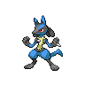
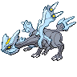
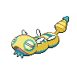
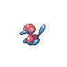
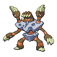

ドラパルトex+クラッシュハンマー

承認済みドラパルト4分類の確定済み完全60枚リストのうち、クラッシュハンマーを3枚以上採用した構築です。元の派生型に優先する排他的な分類で、未分類や他主軸の構築は救済しません。
確認待ち 1件人の確認: 未確認分類の確認: 未確認対面の確認: 未確認更新記録: 未記入
作成日: 2026-11-13 JST
当週 2026-11-06〜2026-11-12（7日） / 前週 2026-10-30〜2026-11-05（7日）
公式公開結果に基づく週次レポートです。
16枠×大会数は検算用の参考値です。公式の全掲載枠を入賞シェアの分母にし、不足・超過を別々に示します。実参加人数と不足・超過の理由は未確認です。デッキコード未掲載も1入賞枠に含めます。
当週: 参考1120枠・公式掲載1120枠、不足0枠・超過0枠・差引0枠。 前週: 参考528枠・公式掲載528枠、不足0枠・超過0枠・差引0枠。
当週・比較週に16枠との差がある大会はありません。
更新推奨は機械的な確認候補です。構築の採否や対面判断は人が確認して記入します。
デッキ数は公開入賞枠数で、同じコードの反復入賞も数えます。入賞枠数順です。入賞シェアは使用率・実対戦勝率ではありません。期間ごとに大会数と公開入賞枠数が異なり、会場数による重み調整はしていません。「その他」は分類集約、「表示外（Top N外）」は表示件数による合算で、別の区分です。
| 順位 | デッキ分類 | デッキ数 | シェア | 差分 |
|---|---|---|---|---|
| 1 | ドラパルト 型・相方別の内訳と入賞一覧 | 353 | 31.52% | +1.21pt |
| 2 | ガルーラ  型・相方別の内訳と入賞一覧 | 84 | 7.50% | -0.08pt |
| 3 | Nのゾロアークex  構築プロファイル / 入賞一覧 | 62 | 5.54% | +1.18pt |
| 4 | フーディン  構築プロファイル / 入賞一覧 | 62 | 5.54% | +1.37pt |
| 5 | メガルカリオex＋ソルロック／ルナトーン    構築プロファイル / 入賞一覧 | 53 | 4.73% | -0.76pt |
| 6 | メガドリュウズex＋メタグロス／ゲノセクトex    構築プロファイル / 入賞一覧 | 51 | 4.55% | +0.20pt |
| 7 | メガレックウザex＋ヒビキのホウオウex   構築プロファイル / 入賞一覧 | 46 | 4.11% | -0.06pt |
| 8 | ヤドキング＋キュレム＋メタグロス   構築プロファイル / 入賞一覧 | 35 | 3.12% | -1.42pt |
| 9 | シロナのガブリアスex＋シロナのロズレイド   構築プロファイル / 入賞一覧 | 32 | 2.86% | -0.36pt |
| 10 | メガニウム＋カミツオロチex  構築プロファイル / 入賞一覧 | 32 | 2.86% | +0.40pt |
| 11 | ダダリン＋ジュペッタ  構築プロファイル / 入賞一覧 | 29 | 2.59% | -0.44pt |
| 12 | カミッチュ＋アズマオウ＋バチンキー    構築プロファイル / 入賞一覧 | 20 | 1.79% | -0.87pt |
| 13 | ゲッコウガex／メガゲッコウガex  構築プロファイル / 入賞一覧 | 20 | 1.79% | +0.08pt |
| 14 | イワパレス  構築プロファイル / 入賞一覧 | 18 | 1.61% | -0.10pt |
| 15 | メガサメハダーex＋ストリンダー  構築プロファイル / 入賞一覧 | 18 | 1.61% | -1.23pt |
| 16 | メガニウム＋オリーヴァex  構築プロファイル / 入賞一覧 | 17 | 1.52% | -1.32pt |
| 17 | メガミミロップex＋ノココッチ   構築プロファイル / 入賞一覧 | 17 | 1.52% | +0.38pt |
| 18 | マリィのオーロンゲex＋ユキメノコ   構築プロファイル / 入賞一覧 | 15 | 1.34% | +0.39pt |
| 19 | メガスターミーex＋メガユキメノコex  構築プロファイル / 入賞一覧 | 12 | 1.07% | +0.88pt |
| 20 | その他のデッキタイプ 構築プロファイル / 入賞一覧 | 10 | 0.89% | +0.51pt |
| 21 | ソウブレイズex＋ソルロック／ルナトーン  構築プロファイル / 入賞一覧 | 10 | 0.89% | +0.14pt |
| 22 | スピアーex  構築プロファイル / 入賞一覧 | 7 | 0.62% | +0.44pt |
| 23 | メガニウム＋メガフシギバナex  構築プロファイル / 入賞一覧 | 7 | 0.62% | +0.06pt |
| 24 | ロケット団のミュウツーex＋ロケット団のワナイダー   構築プロファイル / 入賞一覧 | 7 | 0.62% | +0.44pt |
| 25 | ロケット団のドンカラス＋ロケット団のポリゴン2   構築プロファイル / 入賞一覧 | 6 | 0.54% | -0.03pt |
| 26 | ストリンダー＋マシマシラ 構築プロファイル / 入賞一覧 | 5 | 0.45% | +0.07pt |
| 27 | ダイゴのメタグロスex 構築プロファイル / 入賞一覧 | 5 | 0.45% | +0.26pt |
| 28 | ブリジュラスex＋ノココッチ  構築プロファイル / 入賞一覧 | 5 | 0.45% | +0.26pt |
| 29 | ヒビキのバクフーン  構築プロファイル / 入賞一覧 | 3 | 0.27% | +0.08pt |
| 30 | デッキコード未掲載（分類不明） 入賞一覧 | 2 | 0.18% | +0.18pt |
| 31 | ヨノワール複合型  構築プロファイル / 入賞一覧 | 2 | 0.18% | -0.01pt |
| 32 | ガメノデス＋イイネイヌ   構築プロファイル / 入賞一覧 | 0 | 0.00% | -0.38pt |
| 33 | ドデカバシ系  構築プロファイル / 入賞一覧 | 0 | 0.00% | -0.38pt |
| — | 表示外（Top N外） | 130 | 0.00% | — |
各枠は1つの型にだけ計上します。全公開枠シェアは未分類を含む分母、family内はそのfamilyだけを分母にします。
クラッシュハンマー型は3枚以上を優先し、ポケモンの相方より先に分けた承認済み分類です。
| 型 / 相方 | 公開入賞枠 | 全公開枠シェア | family内シェア | 前週枠 | 前週全公開枠シェア | 差分 |
|---|---|---|---|---|---|---|
ドラパルトex+クラッシュハンマー 構築プロファイル / 入賞一覧 | 197 | 17.59% | 55.81% | 86 | 16.29% | +1.30pt |
ドラパルトex＋ノココッチ 構築プロファイル / 入賞一覧 | 37 | 3.30% | 10.48% | 10 | 1.89% | +1.41pt |
ドラパルトex＋バシャーモex  構築プロファイル / 入賞一覧 | 63 | 5.62% | 17.85% | 40 | 7.58% | -1.95pt |
ドラパルトex＋ヨノワール 構築プロファイル / 入賞一覧 | 52 | 4.64% | 14.73% | 23 | 4.36% | +0.29pt |
ドラパルトのその他派生形 構築プロファイル / 入賞一覧 | 4 | 0.36% | 1.13% | 1 | 0.19% | +0.17pt |
各枠は1つの型にだけ計上します。全公開枠シェアは未分類を含む分母、family内はそのfamilyだけを分母にします。
| 型 / 相方 | 公開入賞枠 | 全公開枠シェア | family内シェア | 前週枠 | 前週全公開枠シェア | 差分 |
|---|---|---|---|---|---|---|
オーガポンみどり＋メガガルーラex〈コライドン採用・タケルライコ不採用〉   構築プロファイル / 入賞一覧 | 14 | 1.25% | 16.67% | 9 | 1.70% | -0.45pt |
オーガポンみどり＋メガガルーラex〈タケルライコ・コライドン両不採用〉 構築プロファイル / 入賞一覧 | 11 | 0.98% | 13.10% | 4 | 0.76% | +0.22pt |
オーガポンみどり＋メガガルーラex〈タケルライコ・コライドン両採用〉  構築プロファイル / 入賞一覧 | 7 | 0.62% | 8.33% | 6 | 1.14% | -0.51pt |
オーガポンみどり＋メガガルーラex〈タケルライコ採用・コライドン不採用〉 構築プロファイル / 入賞一覧 | 44 | 3.93% | 52.38% | 20 | 3.79% | +0.14pt |
メガリザードンXex／Yex＋メガガルーラex  構築プロファイル / 入賞一覧 | 2 | 0.18% | 2.38% | 1 | 0.19% | -0.01pt |
ヨノワール＋メガガルーラex 構築プロファイル / 入賞一覧 | 6 | 0.54% | 7.14% | 0 | 0.00% | +0.54pt |
| 順位 | 区分 | 公開入賞枠 | シェア | 前週枠 | 前週シェア | 差分 |
|---|---|---|---|---|---|---|
| — | 未分類（順位対象外） / 入賞一覧 | 75 | 6.70% | 41 | 7.77% | -1.07pt |
| 順位 | デッキ分類 | 公開入賞枠 | シェア | 前週枠 | 前週シェア | 差分 |
|---|---|---|---|---|---|---|
| 1 | ドラパルト 型・相方別の内訳と入賞一覧 | 353 | 31.52% | 160 | 30.30% | +1.21pt |
| 2 | ガルーラ 型・相方別の内訳と入賞一覧 | 84 | 7.50% | 40 | 7.58% | -0.08pt |
| 3 | Nのゾロアークex 構築プロファイル / 入賞一覧 | 62 | 5.54% | 23 | 4.36% | +1.18pt |
| 4 | フーディン 構築プロファイル / 入賞一覧 | 62 | 5.54% | 22 | 4.17% | +1.37pt |
| 5 | メガルカリオex＋ソルロック／ルナトーン 構築プロファイル / 入賞一覧 | 53 | 4.73% | 29 | 5.49% | -0.76pt |
| 6 | メガドリュウズex＋メタグロス／ゲノセクトex 構築プロファイル / 入賞一覧 | 51 | 4.55% | 23 | 4.36% | +0.20pt |
| 7 | メガレックウザex＋ヒビキのホウオウex 構築プロファイル / 入賞一覧 | 46 | 4.11% | 22 | 4.17% | -0.06pt |
| 8 | ヤドキング＋キュレム＋メタグロス 構築プロファイル / 入賞一覧 | 35 | 3.12% | 24 | 4.55% | -1.42pt |
| 9 | シロナのガブリアスex＋シロナのロズレイド 構築プロファイル / 入賞一覧 | 32 | 2.86% | 17 | 3.22% | -0.36pt |
| 10 | メガニウム＋カミツオロチex 構築プロファイル / 入賞一覧 | 32 | 2.86% | 13 | 2.46% | +0.40pt |
| 11 | ダダリン＋ジュペッタ 構築プロファイル / 入賞一覧 | 29 | 2.59% | 16 | 3.03% | -0.44pt |
| 12 | カミッチュ＋アズマオウ＋バチンキー 構築プロファイル / 入賞一覧 | 20 | 1.79% | 14 | 2.65% | -0.87pt |
| 13 | ゲッコウガex／メガゲッコウガex 構築プロファイル / 入賞一覧 | 20 | 1.79% | 9 | 1.70% | +0.08pt |
| 14 | イワパレス 構築プロファイル / 入賞一覧 | 18 | 1.61% | 9 | 1.70% | -0.10pt |
| 15 | メガサメハダーex＋ストリンダー 構築プロファイル / 入賞一覧 | 18 | 1.61% | 15 | 2.84% | -1.23pt |
| 16 | メガニウム＋オリーヴァex 構築プロファイル / 入賞一覧 | 17 | 1.52% | 15 | 2.84% | -1.32pt |
| 17 | メガミミロップex＋ノココッチ 構築プロファイル / 入賞一覧 | 17 | 1.52% | 6 | 1.14% | +0.38pt |
| 18 | マリィのオーロンゲex＋ユキメノコ 構築プロファイル / 入賞一覧 | 15 | 1.34% | 5 | 0.95% | +0.39pt |
| 19 | メガスターミーex＋メガユキメノコex 構築プロファイル / 入賞一覧 | 12 | 1.07% | 1 | 0.19% | +0.88pt |
| 20 | その他のデッキタイプ 構築プロファイル / 入賞一覧 | 10 | 0.89% | 2 | 0.38% | +0.51pt |
| 21 | ソウブレイズex＋ソルロック／ルナトーン 構築プロファイル / 入賞一覧 | 10 | 0.89% | 4 | 0.76% | +0.14pt |
| 22 | スピアーex 構築プロファイル / 入賞一覧 | 7 | 0.62% | 1 | 0.19% | +0.44pt |
| 23 | メガニウム＋メガフシギバナex 構築プロファイル / 入賞一覧 | 7 | 0.62% | 3 | 0.57% | +0.06pt |
| 24 | ロケット団のミュウツーex＋ロケット団のワナイダー 構築プロファイル / 入賞一覧 | 7 | 0.62% | 1 | 0.19% | +0.44pt |
| 25 | ロケット団のドンカラス＋ロケット団のポリゴン2 構築プロファイル / 入賞一覧 | 6 | 0.54% | 3 | 0.57% | -0.03pt |
| 26 | ストリンダー＋マシマシラ 構築プロファイル / 入賞一覧 | 5 | 0.45% | 2 | 0.38% | +0.07pt |
| 27 | ダイゴのメタグロスex 構築プロファイル / 入賞一覧 | 5 | 0.45% | 1 | 0.19% | +0.26pt |
| 28 | ブリジュラスex＋ノココッチ 構築プロファイル / 入賞一覧 | 5 | 0.45% | 1 | 0.19% | +0.26pt |
| 29 | ヒビキのバクフーン 構築プロファイル / 入賞一覧 | 3 | 0.27% | 1 | 0.19% | +0.08pt |
| 30 | デッキコード未掲載（分類不明） 入賞一覧 | 2 | 0.18% | 0 | 0.00% | +0.18pt |
| 31 | ヨノワール複合型 構築プロファイル / 入賞一覧 | 2 | 0.18% | 1 | 0.19% | -0.01pt |
| 32 | ガメノデス＋イイネイヌ 構築プロファイル / 入賞一覧 | 0 | 0.00% | 2 | 0.38% | -0.38pt |
| 33 | ドデカバシ系 構築プロファイル / 入賞一覧 | 0 | 0.00% | 2 | 0.38% | -0.38pt |
保存済み期間の各点を表示します。全国の全入賞の網羅は未確認です。各点の分母は当該期間の全公開入賞枠です。入賞シェアは使用率・実対戦勝率ではありません。
カード採用率と平均採用枚数は、いずれも60枚確認済みの公開入賞枠を分母にします。unique deck codeを分母にする値とは区別します。下表は両週各5枠以上で、採用率差が10pt以上または平均採用枚数差が0.25枚以上（暫定）の候補です。符号は当週−前週で、枚数分布は0枚も含めます。分母が0の週は分布を未確認として補完しません。
ドラパルトex+クラッシュハンマー当週シェア 17.59% / 変化カード 3件 / 確認推奨 1件カード確認範囲
当週: 公開入賞枠 197 / 60枚確認済み 197 / 未確認・不完全 0
前週: 公開入賞枠 86 / 60枚確認済み 86 / 未確認・不完全 0
| 変化があったカード | 変化 |
|---|---|
| ファイヤー | 平均 前週0.86枚→今週0.69枚 枚数差 -0.17枚 採用率差 -17.01pt 枚数分布今週 0枚（不採用） 30.96%（61枠）1枚 69.04%（136枠） 前週 0枚（不採用） 13.95%（12枠）1枚 86.05%（74枠） |
| ノコッチ | 平均 前週0.74枚→今週0.88枚 枚数差 +0.14枚 採用率差 +10.14pt 枚数分布今週 0枚（不採用） 17.77%（35枠）1枚 76.14%（150枠）2枚 6.09%（12枠） 前週 0枚（不採用） 27.91%（24枠）1枚 69.77%（60枠）2枚 2.33%（2枠） |
| ノココッチ | 平均 前週0.72枚→今週0.82枚 枚数差 +0.10枚 採用率差 +10.14pt 枚数分布今週 0枚（不採用） 17.77%（35枠）1枚 82.23%（162枠） 前週 0枚（不採用） 27.91%（24枠）1枚 72.09%（62枠） |
ドラパルトex＋バシャーモex当週シェア 5.62% / 変化カード 6件 / 確認推奨 1件カード確認範囲
当週: 公開入賞枠 63 / 60枚確認済み 63 / 未確認・不完全 0
前週: 公開入賞枠 40 / 60枚確認済み 40 / 未確認・不完全 0
| 変化があったカード | 変化 |
|---|---|
| ジャッジマン | 平均 前週0.50枚→今週0.90枚 枚数差 +0.40枚 採用率差 +31.87pt 枚数分布今週 0枚（不採用） 20.63%（13枠）1枚 68.25%（43枠）2枚 11.11%（7枠） 前週 0枚（不採用） 52.50%（21枠）1枚 45.00%（18枠）2枚 2.50%（1枠） |
| 危ない廃墟 | 平均 前週0.72枚→今週0.46枚 枚数差 -0.26枚 採用率差 -13.06pt 枚数分布今週 0枚（不採用） 55.56%（35枠）1枚 42.86%（27枠）2枚 1.59%（1枠） 前週 0枚（不採用） 42.50%（17枠）1枚 42.50%（17枠）2枚 15.00%（6枠） |
| ロケット団の監視塔 | 平均 前週0.75枚→今週0.92枚 枚数差 +0.17枚 採用率差 +15.95pt 枚数分布今週 0枚（不採用） 19.05%（12枠）1枚 69.84%（44枠）2枚 11.11%（7枠） 前週 0枚（不採用） 35.00%（14枠）1枚 55.00%（22枠）2枚 10.00%（4枠） |
| スペシャルレッドカード | 平均 前週0.55枚→今週0.41枚 枚数差 -0.14枚 採用率差 -13.73pt 枚数分布今週 0枚（不採用） 58.73%（37枠）1枚 41.27%（26枠） 前週 0枚（不採用） 45.00%（18枠）1枚 55.00%（22枠） |
| イーユイ | 平均 前週0.47枚→今週0.60枚 枚数差 +0.13枚 採用率差 +12.82pt 枚数分布今週 0枚（不採用） 39.68%（25枠）1枚 60.32%（38枠） 前週 0枚（不採用） 52.50%（21枠）1枚 47.50%（19枠） |
| シェイミ | 平均 前週0.38枚→今週0.27枚 枚数差 -0.11枚 採用率差 -10.52pt 枚数分布今週 0枚（不採用） 73.02%（46枠）1枚 26.98%（17枠） 前週 0枚（不採用） 62.50%（25枠）1枚 37.50%（15枠） |
Nのゾロアークex当週シェア 5.54% / 変化カード 9件 / 確認推奨 1件カード確認範囲
当週: 公開入賞枠 62 / 60枚確認済み 62 / 未確認・不完全 0
前週: 公開入賞枠 23 / 60枚確認済み 23 / 未確認・不完全 0
| 変化があったカード | 変化 |
|---|---|
| グラビティーマウンテン | 平均 前週0.61枚→今週0.79枚 枚数差 +0.18枚 採用率差 +11.71pt 枚数分布今週 0枚（不採用） 27.42%（17枠）1枚 66.13%（41枠）2枚 6.45%（4枠） 前週 0枚（不採用） 39.13%（9枠）1枚 60.87%（14枠） |
| Nのレシラム | 平均 前週0.91枚→今週0.76枚 枚数差 -0.15枚 採用率差 -15.50pt 枚数分布今週 0枚（不採用） 24.19%（15枠）1枚 75.81%（47枠） 前週 0枚（不採用） 8.70%（2枠）1枚 91.30%（21枠） |
| スボミー | 平均 前週0.22枚→今週0.34枚 枚数差 +0.12枚 採用率差 +10.52pt 枚数分布今週 0枚（不採用） 67.74%（42枠）1枚 30.65%（19枠）2枚 1.61%（1枠） 前週 0枚（不採用） 78.26%（18枠）1枚 21.74%（5枠） |
| シャリタツ | 平均 前週0.65枚→今週0.53枚 枚数差 -0.12枚 採用率差 -11.99pt 枚数分布今週 0枚（不採用） 46.77%（29枠）1枚 53.23%（33枠） 前週 0枚（不採用） 34.78%（8枠）1枚 65.22%（15枠） |
| ツールスクラッパー | 平均 前週0.00枚→今週0.11枚 枚数差 +0.11枚 採用率差 +11.29pt 枚数分布今週 0枚（不採用） 88.71%（55枠）1枚 11.29%（7枠） 前週 0枚（不採用） 100.00%（23枠） |
| イベルタル | 平均 前週0.70枚→今週0.81枚 枚数差 +0.11枚 採用率差 +11.08pt 枚数分布今週 0枚（不採用） 19.35%（12枠）1枚 80.65%（50枠） 前週 0枚（不採用） 30.43%（7枠）1枚 69.57%（16枠） |
| エネルギーつけかえ | 平均 前週0.17枚→今週0.06枚 枚数差 -0.11枚 採用率差 -12.55pt 枚数分布今週 0枚（不採用） 95.16%（59枠）1枚 3.23%（2枠）2枚 1.61%（1枠） 前週 0枚（不採用） 82.61%（19枠）1枚 17.39%（4枠） |
| ヒーローマント | 平均 前週0.04枚→今週0.15枚 枚数差 +0.10枚 採用率差 +10.17pt 枚数分布今週 0枚（不採用） 85.48%（53枠）1枚 14.52%（9枠） 前週 0枚（不採用） 95.65%（22枠）1枚 4.35%（1枠） |
| Nの城 | 平均 前週1.48枚→今週1.42枚 枚数差 -0.06枚 採用率差 -14.52pt 枚数分布今週 0枚（不採用） 14.52%（9枠）1枚 30.65%（19枠）2枚 53.23%（33枠）3枚 1.61%（1枠） 前週 0枚（不採用） 0.00%（0枠）1枚 56.52%（13枠）2枚 39.13%（9枠）3枚 4.35%（1枠） |
フーディン当週シェア 5.54% / 変化カード 16件 / 確認推奨 1件カード確認範囲
当週: 公開入賞枠 62 / 60枚確認済み 62 / 未確認・不完全 0
前週: 公開入賞枠 22 / 60枚確認済み 22 / 未確認・不完全 0
| 変化があったカード | 変化 |
|---|---|
| リーリエのしんじゅ | 平均 前週1.05枚→今週1.94枚 枚数差 +0.89枚 採用率差 +26.83pt 枚数分布今週 0枚（不採用） 32.26%（20枠）1枚 3.23%（2枠）2枚 6.45%（4枠）3枚 54.84%（34枠）4枚 3.23%（2枠） 前週 0枚（不採用） 59.09%（13枠）1枚 4.55%（1枠）2枚 9.09%（2枠）3枚 27.27%（6枠） |
| ワンダーパッチ | 平均 前週1.14枚→今週1.71枚 枚数差 +0.57枚 採用率差 +21.26pt 枚数分布今週 0枚（不採用） 24.19%（15枠）1枚 8.06%（5枠）2枚 40.32%（25枠）3枚 27.42%（17枠） 前週 0枚（不採用） 45.45%（10枠）1枚 13.64%（3枠）2枚 22.73%（5枠）3枚 18.18%（4枠） |
| リーリエのピッピex | 平均 前週0.82枚→今週1.32枚 枚数差 +0.50枚 採用率差 +23.90pt 枚数分布今週 0枚（不採用） 30.65%（19枠）1枚 6.45%（4枠）2枚 62.90%（39枠） 前週 0枚（不採用） 54.55%（12枠）1枚 9.09%（2枠）2枚 36.36%（8枠） |
| バトルコロシアム | 平均 前週2.68枚→今週3.10枚 枚数差 +0.41枚 採用率差 +13.34pt 枚数分布今週 0枚（不採用） 4.84%（3枠）1枚 1.61%（1枠）2枚 4.84%（3枠）3枚 56.45%（35枠）4枚 32.26%（20枠） 前週 0枚（不採用） 18.18%（4枠）2枚 4.55%（1枠）3枚 50.00%（11枠）4枚 27.27%（6枠） |
| ヒカリ | 平均 前週3.55枚→今週3.87枚 枚数差 +0.33枚 採用率差 +0.00pt 枚数分布今週 0枚（不採用） 0.00%（0枠）3枚 12.90%（8枠）4枚 87.10%（54枠） 前週 0枚（不採用） 0.00%（0枠）2枚 9.09%（2枠）3枚 27.27%（6枠）4枚 63.64%（14枠） |
| 夜のタンカ | 平均 前週0.86枚→今週0.55枚 枚数差 -0.32枚 採用率差 -13.64pt 枚数分布今週 0枚（不採用） 50.00%（31枠）1枚 45.16%（28枠）2枚 4.84%（3枠） 前週 0枚（不採用） 36.36%（8枠）1枚 40.91%（9枠）2枚 22.73%（5枠） |
| ノコッチ | 平均 前週2.55枚→今週2.82枚 枚数差 +0.28枚 採用率差 +1.32pt 枚数分布今週 0枚（不採用） 3.23%（2枠）2枚 9.68%（6枠）3枚 85.48%（53枠）4枚 1.61%（1枠） 前週 0枚（不採用） 4.55%（1枠）1枚 4.55%（1枠）2枚 22.73%（5枠）3枚 68.18%（15枠） |
| ふうせん | 平均 前週0.68枚→今週0.42枚 枚数差 -0.26枚 採用率差 -10.56pt 枚数分布今週 0枚（不採用） 74.19%（46枠）1枚 12.90%（8枠）2枚 11.29%（7枠）4枚 1.61%（1枠） 前週 0枚（不採用） 63.64%（14枠）1枚 9.09%（2枠）2枚 22.73%（5枠）3枚 4.55%（1枠） |
| 改造ハンマー | 平均 前週0.73枚→今週0.52枚 枚数差 -0.21枚 採用率差 -19.65pt 枚数分布今週 0枚（不採用） 74.19%（46枠）1枚 3.23%（2枠）2枚 20.97%（13枠）4枚 1.61%（1枠） 前週 0枚（不採用） 54.55%（12枠）1枚 18.18%（4枠）2枚 27.27%（6枠） |
| スペシャルレッドカード | 平均 前週0.73枚→今週0.55枚 枚数差 -0.18枚 採用率差 -12.02pt 枚数分布今週 0枚（不採用） 48.39%（30枠）1枚 48.39%（30枠）2枚 3.23%（2枠） 前週 0枚（不採用） 36.36%（8枠）1枚 54.55%（12枠）2枚 9.09%（2枠） |
| ゲノセクト | 平均 前週0.73枚→今週0.90枚 枚数差 +0.18枚 採用率差 +23.46pt 枚数分布今週 0枚（不採用） 12.90%（8枠）1枚 83.87%（52枠）2枚 3.23%（2枠） 前週 0枚（不採用） 36.36%（8枠）1枚 54.55%（12枠）2枚 9.09%（2枠） |
| コダック | 平均 前週0.32枚→今週0.15枚 枚数差 -0.17枚 採用率差 -17.30pt 枚数分布今週 0枚（不採用） 85.48%（53枠）1枚 14.52%（9枠） 前週 0枚（不採用） 68.18%（15枠）1枚 31.82%（7枠） |
| スイレンのお世話 | 平均 前週0.45枚→今週0.31枚 枚数差 -0.15枚 採用率差 -14.81pt 枚数分布今週 0枚（不採用） 69.35%（43枠）1枚 30.65%（19枠） 前週 0枚（不採用） 54.55%（12枠）1枚 45.45%（10枠） |
| ポケモンいれかえ | 平均 前週0.18枚→今週0.06枚 枚数差 -0.12枚 採用率差 -11.73pt 枚数分布今週 0枚（不採用） 93.55%（58枠）1枚 6.45%（4枠） 前週 0枚（不採用） 81.82%（18枠）1枚 18.18%（4枠） |
| シェイミ | 平均 前週0.95枚→今週0.84枚 枚数差 -0.12枚 採用率差 -11.58pt 枚数分布今週 0枚（不採用） 16.13%（10枠）1枚 83.87%（52枠） 前週 0枚（不採用） 4.55%（1枠）1枚 95.45%（21枠） |
| スピンロトム | 平均 前週0.14枚→今週0.03枚 枚数差 -0.10枚 採用率差 -12.02pt 枚数分布今週 0枚（不採用） 98.39%（61枠）2枚 1.61%（1枠） 前週 0枚（不採用） 86.36%（19枠）1枚 13.64%（3枠） |
メガルカリオex＋ソルロック／ルナトーン当週シェア 4.73% / 変化カード 4件 / 確認推奨 1件カード確認範囲
当週: 公開入賞枠 53 / 60枚確認済み 53 / 未確認・不完全 0
前週: 公開入賞枠 29 / 60枚確認済み 29 / 未確認・不完全 0
| 変化があったカード | 変化 |
|---|---|
| 基本闘エネルギー | 平均 前週9.90枚→今週9.53枚 枚数差 -0.37枚 採用率差 +0.00pt 枚数分布今週 0枚（不採用） 0.00%（0枠）8枚 9.43%（5枠）9枚 47.17%（25枠）10枚 28.30%（15枠）11枚 11.32%（6枠）12枚 3.77%（2枠） 前週 0枚（不採用） 0.00%（0枠）8枚 3.45%（1枠）9枚 31.03%（9枠）10枚 44.83%（13枠）11枚 13.79%（4枠）12枚 6.90%（2枠） |
| ふうせん | 平均 前週0.76枚→今週1.04枚 枚数差 +0.28枚 採用率差 +20.30pt 枚数分布今週 0枚（不採用） 24.53%（13枠）1枚 50.94%（27枠）2枚 20.75%（11枠）3枚 3.77%（2枠） 前週 0枚（不採用） 44.83%（13枠）1枚 37.93%（11枠）2枚 13.79%（4枠）3枚 3.45%（1枠） |
| ロック闘エネルギー | 平均 前週1.14枚→今週1.38枚 枚数差 +0.24枚 採用率差 +14.96pt 枚数分布今週 0枚（不採用） 26.42%（14枠）1枚 11.32%（6枠）2枚 60.38%（32枠）3枚 1.89%（1枠） 前週 0枚（不採用） 41.38%（12枠）1枚 6.90%（2枠）2枚 48.28%（14枠）3枚 3.45%（1枠） |
| マキシマムベルト | 平均 前週0.52枚→今週0.62枚 枚数差 +0.11枚 採用率差 +10.54pt 枚数分布今週 0枚（不採用） 37.74%（20枠）1枚 62.26%（33枠） 前週 0枚（不採用） 48.28%（14枠）1枚 51.72%（15枠） |
ドラパルトex＋ヨノワール当週シェア 4.64% / 変化カード 7件 / 確認推奨 1件カード確認範囲
当週: 公開入賞枠 52 / 60枚確認済み 52 / 未確認・不完全 0
前週: 公開入賞枠 23 / 60枚確認済み 23 / 未確認・不完全 0
| 変化があったカード | 変化 |
|---|---|
| シェイミ | 平均 前週0.48枚→今週0.17枚 枚数差 -0.31枚 採用率差 -30.52pt 枚数分布今週 0枚（不採用） 82.69%（43枠）1枚 17.31%（9枠） 前週 0枚（不採用） 52.17%（12枠）1枚 47.83%（11枠） |
| サマヨール | 平均 前週1.22枚→今週1.52枚 枚数差 +0.30枚 採用率差 +4.35pt 枚数分布今週 0枚（不採用） 0.00%（0枠）1枚 50.00%（26枠）2枚 48.08%（25枠）3枚 1.92%（1枠） 前週 0枚（不採用） 4.35%（1枠）1枚 69.57%（16枠）2枚 26.09%（6枠） |
| マシマシラ | 平均 前週1.30枚→今週1.02枚 枚数差 -0.29枚 採用率差 -13.46pt 枚数分布今週 0枚（不採用） 13.46%（7枠）1枚 71.15%（37枠）2枚 15.38%（8枠） 前週 0枚（不採用） 0.00%（0枠）1枚 69.57%（16枠）2枚 30.43%（7枠） |
| ジャッジマン | 平均 前週0.13枚→今週0.35枚 枚数差 +0.22枚 採用率差 +19.65pt 枚数分布今週 0枚（不採用） 67.31%（35枠）1枚 30.77%（16枠）2枚 1.92%（1枠） 前週 0枚（不採用） 86.96%（20枠）1枚 13.04%（3枠） |
| 危ない廃墟 | 平均 前週0.17枚→今週0.29枚 枚数差 +0.11枚 採用率差 +13.88pt 枚数分布今週 0枚（不採用） 73.08%（38枠）1枚 25.00%（13枠）2枚 1.92%（1枠） 前週 0枚（不採用） 86.96%（20枠）1枚 8.70%（2枠）2枚 4.35%（1枠） |
| 基本悪エネルギー | 平均 前週1.74枚→今週1.63枚 枚数差 -0.10枚 採用率差 -13.46pt 枚数分布今週 0枚（不採用） 13.46%（7枠）1枚 9.62%（5枠）2枚 76.92%（40枠） 前週 0枚（不採用） 0.00%（0枠）1枚 26.09%（6枠）2枚 73.91%（17枠） |
| ジャミングタワー | 平均 前週0.65枚→今週0.58枚 枚数差 -0.08枚 採用率差 -11.37pt 枚数分布今週 0枚（不採用） 46.15%（24枠）1枚 50.00%（26枠）2枚 3.85%（2枠） 前週 0枚（不採用） 34.78%（8枠）1枚 65.22%（15枠） |
メガドリュウズex＋メタグロス／ゲノセクトex当週シェア 4.55% / 変化カード 12件 / 確認推奨 1件カード確認範囲
当週: 公開入賞枠 51 / 60枚確認済み 51 / 未確認・不完全 0
前週: 公開入賞枠 23 / 60枚確認済み 23 / 未確認・不完全 0
| 変化があったカード | 変化 |
|---|---|
| リーリエの決心 | 平均 前週0.74枚→今週0.37枚 枚数差 -0.37枚 採用率差 -15.17pt 枚数分布今週 0枚（不採用） 80.39%（41枠）1枚 3.92%（2枠）2枚 13.73%（7枠）3枚 1.96%（1枠） 前週 0枚（不採用） 65.22%（15枠）1枚 8.70%（2枠）2枚 17.39%（4枠）3枚 4.35%（1枠）4枚 4.35%（1枠） |
| 基本鋼エネルギー | 平均 前週15.65枚→今週16.00枚 枚数差 +0.35枚 採用率差 +0.00pt 枚数分布今週 0枚（不採用） 0.00%（0枠）15枚 11.76%（6枠）16枚 82.35%（42枠）17枚 3.92%（2枠）20枚 1.96%（1枠） 前週 0枚（不採用） 0.00%（0枠）14枚 4.35%（1枠）15枚 30.43%（7枠）16枚 60.87%（14枠）17枚 4.35%（1枠） |
| なかよしポフィン | 平均 前週1.91枚→今週1.57枚 枚数差 -0.34枚 採用率差 -5.46pt 枚数分布今週 0枚（不採用） 9.80%（5枠）1枚 52.94%（27枠）2枚 15.69%（8枠）3枚 13.73%（7枠）4枚 7.84%（4枠） 前週 0枚（不採用） 4.35%（1枠）1枚 43.48%（10枠）2枚 21.74%（5枠）3枚 17.39%（4枠）4枚 13.04%（3枠） |
| ポケギア3.0 | 平均 前週2.17枚→今週2.43枚 枚数差 +0.26枚 採用率差 +9.55pt 枚数分布今週 0枚（不採用） 7.84%（4枠）1枚 9.80%（5枠）2枚 29.41%（15枠）3枚 37.25%（19枠）4枚 15.69%（8枠） 前週 0枚（不採用） 17.39%（4枠）1枚 8.70%（2枠）2枚 21.74%（5枠）3枚 43.48%（10枠）4枚 8.70%（2枠） |
| ジャッジマン | 平均 前週0.61枚→今週0.86枚 枚数差 +0.25枚 採用率差 +11.00pt 枚数分布今週 0枚（不採用） 41.18%（21枠）1枚 33.33%（17枠）2枚 23.53%（12枠）3枚 1.96%（1枠） 前週 0枚（不採用） 52.17%（12枠）1枚 34.78%（8枠）2枚 13.04%（3枠） |
| 夜のタンカ | 平均 前週0.35枚→今週0.59枚 枚数差 +0.24枚 採用率差 +18.16pt 枚数分布今週 0枚（不採用） 47.06%（24枠）1枚 47.06%（24枠）2枚 5.88%（3枠） 前週 0枚（不採用） 65.22%（15枠）1枚 34.78%（8枠） |
| グラビティーマウンテン | 平均 前週0.83枚→今週1.06枚 枚数差 +0.23枚 採用率差 +13.47pt 枚数分布今週 0枚（不採用） 3.92%（2枠）1枚 86.27%（44枠）2枚 9.80%（5枠） 前週 0枚（不採用） 17.39%（4枠）1枚 82.61%（19枠） |
| ハイパーボール | 平均 前週1.00枚→今週0.80枚 枚数差 -0.20枚 採用率差 -10.06pt 枚数分布今週 0枚（不採用） 27.45%（14枠）1枚 66.67%（34枠）2枚 3.92%（2枠）3枚 1.96%（1枠） 前週 0枚（不採用） 17.39%（4枠）1枚 69.57%（16枠）2枚 8.70%（2枠）3枚 4.35%（1枠） |
| ブレイブバングル | 平均 前週0.13枚→今週0.00枚 枚数差 -0.13枚 採用率差 -13.04pt 枚数分布今週 0枚（不採用） 100.00%（51枠） 前週 0枚（不採用） 86.96%（20枠）1枚 13.04%（3枠） |
| アイアンディフェンダー | 平均 前週0.30枚→今週0.18枚 枚数差 -0.13枚 採用率差 -12.79pt 枚数分布今週 0枚（不採用） 82.35%（42枠）1枚 17.65%（9枠） 前週 0枚（不採用） 69.57%（16枠）1枚 30.43%（7枠） |
| スグリ | 平均 前週1.04枚→今週0.92枚 枚数差 -0.12枚 採用率差 -10.49pt 枚数分布今週 0枚（不採用） 23.53%（12枠）1枚 60.78%（31枠）2枚 15.69%（8枠） 前週 0枚（不採用） 13.04%（3枠）1枚 69.57%（16枠）2枚 17.39%（4枠） |
| シェイミ | 平均 前週0.65枚→今週0.55枚 枚数差 -0.10枚 採用率差 -10.32pt 枚数分布今週 0枚（不採用） 45.10%（23枠）1枚 54.90%（28枠） 前週 0枚（不採用） 34.78%（8枠）1枚 65.22%（15枠） |
メガレックウザex＋ヒビキのホウオウex当週シェア 4.11% / 変化カード 3件 / 確認推奨 1件カード確認範囲
当週: 公開入賞枠 46 / 60枚確認済み 46 / 未確認・不完全 0
前週: 公開入賞枠 22 / 60枚確認済み 22 / 未確認・不完全 0
| 変化があったカード | 変化 |
|---|---|
| リーリエの決心 | 平均 前週1.45枚→今週1.74枚 枚数差 +0.28枚 採用率差 -1.58pt 枚数分布今週 0枚（不採用） 15.22%（7枠）1枚 13.04%（6枠）2枚 58.70%（27枠）3枚 8.70%（4枠）4枚 4.35%（2枠） 前週 0枚（不採用） 13.64%（3枠）1枚 27.27%（6枠）2枚 59.09%（13枠） |
| ニャースex | 平均 前週1.59枚→今週1.33枚 枚数差 -0.26枚 採用率差 +0.00pt 枚数分布今週 0枚（不採用） 0.00%（0枠）1枚 67.39%（31枠）2枚 32.61%（15枠） 前週 0枚（不採用） 0.00%（0枠）1枚 45.45%（10枠）2枚 50.00%（11枠）3枚 4.55%（1枠） |
| レシラムex | 平均 前週0.36枚→今週0.48枚 枚数差 +0.11枚 採用率差 +11.46pt 枚数分布今週 0枚（不採用） 52.17%（24枠）1枚 47.83%（22枠） 前週 0枚（不採用） 63.64%（14枠）1枚 36.36%（8枠） |
オーガポンみどり＋メガガルーラex〈タケルライコ採用・コライドン不採用〉当週シェア 3.93% / 変化カード 6件 / 確認推奨 1件カード確認範囲
当週: 公開入賞枠 44 / 60枚確認済み 44 / 未確認・不完全 0
前週: 公開入賞枠 20 / 60枚確認済み 20 / 未確認・不完全 0
| 変化があったカード | 変化 |
|---|---|
| ボスの指令 | 平均 前週2.45枚→今週2.80枚 枚数差 +0.35枚 採用率差 +0.00pt 枚数分布今週 0枚（不採用） 0.00%（0枠）2枚 22.73%（10枠）3枚 75.00%（33枠）4枚 2.27%（1枠） 前週 0枚（不採用） 0.00%（0枠）1枚 5.00%（1枠）2枚 45.00%（9枠）3枚 50.00%（10枠） |
| ガチグマ アカツキex | 平均 前週0.45枚→今週0.70枚 枚数差 +0.25枚 採用率差 +25.45pt 枚数分布今週 0枚（不採用） 29.55%（13枠）1枚 70.45%（31枠） 前週 0枚（不採用） 55.00%（11枠）1枚 45.00%（9枠） |
| ナゲツケサル | 平均 前週0.55枚→今週0.32枚 枚数差 -0.23枚 採用率差 -23.18pt 枚数分布今週 0枚（不採用） 68.18%（30枠）1枚 31.82%（14枠） 前週 0枚（不採用） 45.00%（9枠）1枚 55.00%（11枠） |
| 基本水エネルギー | 平均 前週1.00枚→今週0.80枚 枚数差 -0.20枚 採用率差 -12.73pt 枚数分布今週 0枚（不採用） 22.73%（10枠）1枚 75.00%（33枠）2枚 2.27%（1枠） 前週 0枚（不採用） 10.00%（2枠）1枚 80.00%（16枠）2枚 10.00%（2枠） |
| ジャッジマン | 平均 前週0.70枚→今週0.89枚 枚数差 +0.19枚 採用率差 +23.64pt 枚数分布今週 0枚（不採用） 11.36%（5枠）1枚 88.64%（39枠） 前週 0枚（不採用） 35.00%（7枠）1枚 60.00%（12枠）2枚 5.00%（1枠） |
| オーガポン いどのめんex | 平均 前週0.95枚→今週0.80枚 枚数差 -0.15枚 採用率差 -12.73pt 枚数分布今週 0枚（不採用） 22.73%（10枠）1枚 75.00%（33枠）2枚 2.27%（1枠） 前週 0枚（不採用） 10.00%（2枠）1枚 85.00%（17枠）2枚 5.00%（1枠） |
ドラパルトex＋ノココッチ当週シェア 3.30% / 変化カード 11件 / 確認推奨 1件カード確認範囲
当週: 公開入賞枠 37 / 60枚確認済み 37 / 未確認・不完全 0
前週: 公開入賞枠 10 / 60枚確認済み 10 / 未確認・不完全 0
| 変化があったカード | 変化 |
|---|---|
| ジャミングタワー | 平均 前週0.50枚→今週0.08枚 枚数差 -0.42枚 採用率差 -41.89pt 枚数分布今週 0枚（不採用） 91.89%（34枠）1枚 8.11%（3枠） 前週 0枚（不採用） 50.00%（5枠）1枚 50.00%（5枠） |
| 危ない廃墟 | 平均 前週1.50枚→今週1.92枚 枚数差 +0.42枚 採用率差 +0.00pt 枚数分布今週 0枚（不採用） 0.00%（0枠）1枚 13.51%（5枠）2枚 81.08%（30枠）3枚 5.41%（2枠） 前週 0枚（不採用） 0.00%（0枠）1枚 50.00%（5枠）2枚 50.00%（5枠） |
| ヒカリ | 平均 前週0.70枚→今週0.35枚 枚数差 -0.35枚 採用率差 -24.86pt 枚数分布今週 0枚（不採用） 64.86%（24枠）1枚 35.14%（13枠） 前週 0枚（不採用） 40.00%（4枠）1枚 50.00%（5枠）2枚 10.00%（1枠） |
| ジャッジマン | 平均 前週0.60枚→今週0.92枚 枚数差 +0.32枚 採用率差 +23.78pt 枚数分布今週 0枚（不採用） 16.22%（6枠）1枚 75.68%（28枠）2枚 8.11%（3枠） 前週 0枚（不採用） 40.00%（4枠）1枚 60.00%（6枠） |
| アカマツ | 平均 前週2.00枚→今週2.30枚 枚数差 +0.30枚 採用率差 +0.00pt 枚数分布今週 0枚（不採用） 0.00%（0枠）2枚 70.27%（26枠）3枚 29.73%（11枠） 前週 0枚（不採用） 0.00%（0枠）2枚 100.00%（10枠） |
| アンフェアスタンプ | 平均 前週1.00枚→今週0.76枚 枚数差 -0.24枚 採用率差 -24.32pt 枚数分布今週 0枚（不採用） 24.32%（9枠）1枚 75.68%（28枠） 前週 0枚（不採用） 0.00%（0枠）1枚 100.00%（10枠） |
| ヒーローマント | 平均 前週0.00枚→今週0.22枚 枚数差 +0.22枚 採用率差 +21.62pt 枚数分布今週 0枚（不採用） 78.38%（29枠）1枚 21.62%（8枠） 前週 0枚（不採用） 100.00%（10枠） |
| ダークベル | 平均 前週0.20枚→今週0.00枚 枚数差 -0.20枚 採用率差 -10.00pt 枚数分布今週 0枚（不採用） 100.00%（37枠） 前週 0枚（不採用） 90.00%（9枠）2枚 10.00%（1枠） |
| メイのはげまし | 平均 前週1.00枚→今週0.84枚 枚数差 -0.16枚 採用率差 -16.22pt 枚数分布今週 0枚（不採用） 16.22%（6枠）1枚 83.78%（31枠） 前週 0枚（不採用） 0.00%（0枠）1枚 100.00%（10枠） |
| イベルタル | 平均 前週0.20枚→今週0.08枚 枚数差 -0.12枚 採用率差 -11.89pt 枚数分布今週 0枚（不採用） 91.89%（34枠）1枚 8.11%（3枠） 前週 0枚（不採用） 80.00%（8枠）1枚 20.00%（2枠） |
| モモワロウex | 平均 前週0.10枚→今週0.00枚 枚数差 -0.10枚 採用率差 -10.00pt 枚数分布今週 0枚（不採用） 100.00%（37枠） 前週 0枚（不採用） 90.00%（9枠）1枚 10.00%（1枠） |
ヤドキング＋キュレム＋メタグロス当週シェア 3.12% / 変化カード 5件 / 確認推奨 1件カード確認範囲
当週: 公開入賞枠 35 / 60枚確認済み 35 / 未確認・不完全 0
前週: 公開入賞枠 24 / 60枚確認済み 24 / 未確認・不完全 0
| 変化があったカード | 変化 |
|---|---|
| ミュウex | 平均 前週0.08枚→今週0.34枚 枚数差 +0.26枚 採用率差 +25.95pt 枚数分布今週 0枚（不採用） 65.71%（23枠）1枚 34.29%（12枠） 前週 0枚（不採用） 91.67%（22枠）1枚 8.33%（2枠） |
| アンノーン | 平均 前週0.54枚→今週0.40枚 枚数差 -0.14枚 採用率差 -14.17pt 枚数分布今週 0枚（不採用） 60.00%（21枠）1枚 40.00%（14枠） 前週 0枚（不採用） 45.83%（11枠）1枚 54.17%（13枠） |
| ボスの指令 | 平均 前週0.04枚→今週0.17枚 枚数差 +0.13枚 採用率差 +12.98pt 枚数分布今週 0枚（不採用） 82.86%（29枠）1枚 17.14%（6枠） 前週 0枚（不採用） 95.83%（23枠）1枚 4.17%（1枠） |
| アクロマの執念 | 平均 前週0.12枚→今週0.00枚 枚数差 -0.12枚 採用率差 -12.50pt 枚数分布今週 0枚（不採用） 100.00%（35枠） 前週 0枚（不採用） 87.50%（21枠）1枚 12.50%（3枠） |
| パーモット | 平均 前週0.50枚→今週0.40枚 枚数差 -0.10枚 採用率差 -10.00pt 枚数分布今週 0枚（不採用） 60.00%（21枠）1枚 40.00%（14枠） 前週 0枚（不採用） 50.00%（12枠）1枚 50.00%（12枠） |
シロナのガブリアスex＋シロナのロズレイド当週シェア 2.86% / 変化カード 4件 / 確認推奨 1件カード確認範囲
当週: 公開入賞枠 32 / 60枚確認済み 32 / 未確認・不完全 0
前週: 公開入賞枠 17 / 60枚確認済み 17 / 未確認・不完全 0
| 変化があったカード | 変化 |
|---|---|
| ミアレシティ | 平均 前週0.12枚→今週0.34枚 枚数差 +0.23枚 採用率差 +12.87pt 枚数分布今週 0枚（不採用） 81.25%（26枠）1枚 3.12%（1枠）2枚 15.62%（5枠） 前週 0枚（不採用） 94.12%（16枠）2枚 5.88%（1枠） |
| スペシャルレッドカード | 平均 前週0.35枚→今週0.19枚 枚数差 -0.17枚 採用率差 -16.54pt 枚数分布今週 0枚（不採用） 81.25%（26枠）1枚 18.75%（6枠） 前週 0枚（不採用） 64.71%（11枠）1枚 35.29%（6枠） |
| バトルコロシアム | 平均 前週0.29枚→今週0.16枚 枚数差 -0.14枚 採用率差 -11.03pt 枚数分布今週 0枚（不採用） 87.50%（28枠）1枚 9.38%（3枠）2枚 3.12%（1枠） 前週 0枚（不採用） 76.47%（13枠）1枚 17.65%（3枠）2枚 5.88%（1枠） |
| ふしぎなアメ | 平均 前週0.53枚→今週0.59枚 枚数差 +0.06枚 採用率差 +18.20pt 枚数分布今週 0枚（不採用） 40.62%（13枠）1枚 59.38%（19枠） 前週 0枚（不採用） 58.82%（10枠）1枚 29.41%（5枠）2枚 11.76%（2枠） |
メガニウム＋カミツオロチex当週シェア 2.86% / 変化カード 9件 / 確認推奨 1件カード確認範囲
当週: 公開入賞枠 32 / 60枚確認済み 32 / 未確認・不完全 0
前週: 公開入賞枠 13 / 60枚確認済み 13 / 未確認・不完全 0
| 変化があったカード | 変化 |
|---|---|
| ヒカリ | 平均 前週1.46枚→今週1.03枚 枚数差 -0.43枚 採用率差 -18.75pt 枚数分布今週 0枚（不採用） 18.75%（6枠）1枚 59.38%（19枠）2枚 21.88%（7枠） 前週 0枚（不採用） 0.00%（0枠）1枚 53.85%（7枠）2枚 46.15%（6枠） |
| ハイパーボール | 平均 前週3.15枚→今週3.41枚 枚数差 +0.25枚 採用率差 +0.00pt 枚数分布今週 0枚（不採用） 0.00%（0枠）2枚 6.25%（2枠）3枚 46.88%（15枠）4枚 46.88%（15枠） 前週 0枚（不採用） 0.00%（0枠）2枚 23.08%（3枠）3枚 38.46%（5枠）4枚 38.46%（5枠） |
| 暗号マニアの解読 | 平均 前週0.08枚→今週0.31枚 枚数差 +0.24枚 採用率差 +23.56pt 枚数分布今週 0枚（不採用） 68.75%（22枠）1枚 31.25%（10枠） 前週 0枚（不採用） 92.31%（12枠）1枚 7.69%（1枠） |
| アンフェアスタンプ | 平均 前週0.62枚→今週0.81枚 枚数差 +0.20枚 採用率差 +19.71pt 枚数分布今週 0枚（不採用） 18.75%（6枠）1枚 81.25%（26枠） 前週 0枚（不採用） 38.46%（5枠）1枚 61.54%（8枠） |
| ポケモン回収サイクロン | 平均 前週0.23枚→今週0.06枚 枚数差 -0.17枚 採用率差 -16.83pt 枚数分布今週 0枚（不採用） 93.75%（30枠）1枚 6.25%（2枠） 前週 0枚（不採用） 76.92%（10枠）1枚 23.08%（3枠） |
| スペシャルレッドカード | 平均 前週0.62枚→今週0.47枚 枚数差 -0.15枚 採用率差 -14.66pt 枚数分布今週 0枚（不採用） 53.12%（17枠）1枚 46.88%（15枠） 前週 0枚（不採用） 38.46%（5枠）1枚 61.54%（8枠） |
| ロケット団のラムダ | 平均 前週0.08枚→今週0.19枚 枚数差 +0.11枚 採用率差 +11.06pt 枚数分布今週 0枚（不採用） 81.25%（26枠）1枚 18.75%（6枠） 前週 0枚（不採用） 92.31%（12枠）1枚 7.69%（1枠） |
| ブライア | 平均 前週0.62枚→今週0.72枚 枚数差 +0.10枚 採用率差 +10.34pt 枚数分布今週 0枚（不採用） 28.12%（9枠）1枚 71.88%（23枠） 前週 0枚（不採用） 38.46%（5枠）1枚 61.54%（8枠） |
| ジャッジマン | 平均 前週0.85枚→今週0.81枚 枚数差 -0.03枚 採用率差 -11.30pt 枚数分布今週 0枚（不採用） 34.38%（11枠）1枚 50.00%（16枠）2枚 15.62%（5枠） 前週 0枚（不採用） 23.08%（3枠）1枚 69.23%（9枠）2枚 7.69%（1枠） |
ダダリン＋ジュペッタ当週シェア 2.59% / 変化カード 14件 / 確認推奨 1件カード確認範囲
当週: 公開入賞枠 29 / 60枚確認済み 29 / 未確認・不完全 0
前週: 公開入賞枠 16 / 60枚確認済み 16 / 未確認・不完全 0
| 変化があったカード | 変化 |
|---|---|
| 探検家の先導 | 平均 前週1.75枚→今週1.07枚 枚数差 -0.68枚 採用率差 -5.17pt 枚数分布今週 0枚（不採用） 55.17%（16枠）1枚 3.45%（1枠）2枚 27.59%（8枠）3枚 6.90%（2枠）4枚 6.90%（2枠） 前週 0枚（不採用） 50.00%（8枠）2枚 6.25%（1枠）3枚 12.50%（2枠）4枚 31.25%（5枠） |
| なかよしポフィン | 平均 前週1.06枚→今週1.41枚 枚数差 +0.35枚 採用率差 +18.97pt 枚数分布今週 0枚（不採用） 31.03%（9枠）1枚 3.45%（1枠）2枚 58.62%（17枠）3枚 6.90%（2枠） 前週 0枚（不採用） 50.00%（8枠）2枚 43.75%（7枠）3枚 6.25%（1枠） |
| ムク | 平均 前週2.56枚→今週2.86枚 枚数差 +0.30枚 採用率差 +9.05pt 枚数分布今週 0枚（不採用） 3.45%（1枠）2枚 17.24%（5枠）3枚 65.52%（19枠）4枚 13.79%（4枠） 前週 0枚（不採用） 12.50%（2枠）2枚 18.75%（3枠）3枚 56.25%（9枠）4枚 12.50%（2枠） |
| ノコッチ | 平均 前週2.19枚→今週2.48枚 枚数差 +0.30枚 採用率差 +4.96pt 枚数分布今週 0枚（不採用） 13.79%（4枠）2枚 13.79%（4枠）3枚 68.97%（20枠）4枚 3.45%（1枠） 前週 0枚（不採用） 18.75%（3枠）2枚 31.25%（5枠）3枚 43.75%（7枠）4枚 6.25%（1枠） |
| チャデス | 平均 前週2.31枚→今週2.03枚 枚数差 -0.28枚 採用率差 +5.60pt 枚数分布今週 0枚（不採用） 6.90%（2枠）1枚 20.69%（6枠）2枚 51.72%（15枠）3枚 3.45%（1枠）4枚 17.24%（5枠） 前週 0枚（不採用） 12.50%（2枠）1枚 25.00%（4枠）2枚 18.75%（3枠）3枚 6.25%（1枠）4枚 37.50%（6枠） |
| トウコ | 平均 前週0.38枚→今週0.14枚 枚数差 -0.24枚 採用率差 -15.30pt 枚数分布今週 0枚（不採用） 96.55%（28枠）4枚 3.45%（1枠） 前週 0枚（不採用） 81.25%（13枠）1枚 6.25%（1枠）2枚 6.25%（1枠）3枚 6.25%（1枠） |
| プリズムタワー | 平均 前週2.25枚→今週2.48枚 枚数差 +0.23枚 採用率差 +12.50pt 枚数分布今週 0枚（不採用） 0.00%（0枠）1枚 3.45%（1枠）2枚 44.83%（13枠）3枚 51.72%（15枠） 前週 0枚（不採用） 12.50%（2枠）2枚 37.50%（6枠）3枚 50.00%（8枠） |
| イベルタル | 平均 前週0.00枚→今週0.21枚 枚数差 +0.21枚 採用率差 +20.69pt 枚数分布今週 0枚（不採用） 79.31%（23枠）1枚 20.69%（6枠） 前週 0枚（不採用） 100.00%（16枠） |
| スグリ | 平均 前週0.25枚→今週0.07枚 枚数差 -0.18枚 採用率差 -18.10pt 枚数分布今週 0枚（不採用） 93.10%（27枠）1枚 6.90%（2枠） 前週 0枚（不採用） 75.00%（12枠）1枚 25.00%（4枠） |
| ノココッチex | 平均 前週0.50枚→今週0.66枚 枚数差 +0.16枚 採用率差 +15.52pt 枚数分布今週 0枚（不採用） 34.48%（10枠）1枚 65.52%（19枠） 前週 0枚（不採用） 50.00%（8枠）1枚 50.00%（8枠） |
| スペシャルレッドカード | 平均 前週0.12枚→今週0.28枚 枚数差 +0.15枚 採用率差 +15.09pt 枚数分布今週 0枚（不採用） 72.41%（21枠）1枚 27.59%（8枠） 前週 0枚（不採用） 87.50%（14枠）1枚 12.50%（2枠） |
| ミカルゲ | 平均 前週0.25枚→今週0.10枚 枚数差 -0.15枚 採用率差 -14.66pt 枚数分布今週 0枚（不採用） 89.66%（26枠）1枚 10.34%（3枠） 前週 0枚（不採用） 75.00%（12枠）1枚 25.00%（4枠） |
| レガシーエネルギー | 平均 前週0.81枚→今週0.93枚 枚数差 +0.12枚 採用率差 +11.85pt 枚数分布今週 0枚（不採用） 6.90%（2枠）1枚 93.10%（27枠） 前週 0枚（不採用） 18.75%（3枠）1枚 81.25%（13枠） |
| ポケモンいれかえ | 平均 前週0.00枚→今週0.10枚 枚数差 +0.10枚 採用率差 +10.34pt 枚数分布今週 0枚（不採用） 89.66%（26枠）1枚 10.34%（3枠） 前週 0枚（不採用） 100.00%（16枠） |
カミッチュ＋アズマオウ＋バチンキー当週シェア 1.79% / 変化カード 12件 / 確認推奨 1件カード確認範囲
当週: 公開入賞枠 20 / 60枚確認済み 20 / 未確認・不完全 0
前週: 公開入賞枠 14 / 60枚確認済み 14 / 未確認・不完全 0
| 変化があったカード | 変化 |
|---|---|
| むしとりセット | 平均 前週1.71枚→今週2.10枚 枚数差 +0.39枚 採用率差 +12.86pt 枚数分布今週 0枚（不採用） 30.00%（6枠）1枚 5.00%（1枠）2枚 15.00%（3枠）3枚 25.00%（5枠）4枚 25.00%（5枠） 前週 0枚（不採用） 42.86%（6枠）2枚 7.14%（1枠）3枚 42.86%（6枠）4枚 7.14%（1枠） |
| グロウ草エネルギー | 平均 前週0.79枚→今週1.15枚 枚数差 +0.36枚 採用率差 +12.14pt 枚数分布今週 0枚（不採用） 45.00%（9枠）1枚 25.00%（5枠）2枚 10.00%（2枠）3枚 10.00%（2枠）4枚 10.00%（2枠） 前週 0枚（不採用） 57.14%（8枠）1枚 21.43%（3枠）2枚 14.29%（2枠）4枚 7.14%（1枠） |
| グラジオの決戦 | 平均 前週1.79枚→今週2.10枚 枚数差 +0.31枚 採用率差 -2.86pt 枚数分布今週 0枚（不採用） 10.00%（2枠）1枚 5.00%（1枠）2枚 55.00%（11枠）3枚 25.00%（5枠）4枚 5.00%（1枠） 前週 0枚（不採用） 7.14%（1枠）1枚 21.43%（3枠）2枚 57.14%（8枠）3枚 14.29%（2枠） |
| 夜のタンカ | 平均 前週1.21枚→今週0.90枚 枚数差 -0.31枚 採用率差 -17.86pt 枚数分布今週 0枚（不採用） 25.00%（5枠）1枚 65.00%（13枠）2枚 5.00%（1枠）3枚 5.00%（1枠） 前週 0枚（不採用） 7.14%（1枠）1枚 64.29%（9枠）2枚 28.57%（4枠） |
| ポケモンいれかえ | 平均 前週0.50枚→今週0.80枚 枚数差 +0.30枚 採用率差 +30.00pt 枚数分布今週 0枚（不採用） 20.00%（4枠）1枚 80.00%（16枠） 前週 0枚（不採用） 50.00%（7枠）1枚 50.00%（7枠） |
| ジャッジマン | 平均 前週0.29枚→今週0.05枚 枚数差 -0.24枚 採用率差 -23.57pt 枚数分布今週 0枚（不採用） 95.00%（19枠）1枚 5.00%（1枠） 前週 0枚（不採用） 71.43%（10枠）1枚 28.57%（4枠） |
| ツールスクラッパー | 平均 前週0.07枚→今週0.30枚 枚数差 +0.23枚 採用率差 +22.86pt 枚数分布今週 0枚（不採用） 70.00%（14枠）1枚 30.00%（6枠） 前週 0枚（不採用） 92.86%（13枠）1枚 7.14%（1枠） |
| コダック | 平均 前週0.50枚→今週0.30枚 枚数差 -0.20枚 採用率差 -20.00pt 枚数分布今週 0枚（不採用） 70.00%（14枠）1枚 30.00%（6枠） 前週 0枚（不採用） 50.00%（7枠）1枚 50.00%（7枠） |
| ポケモンキャッチャー | 平均 前週0.14枚→今週0.00枚 枚数差 -0.14枚 採用率差 -14.29pt 枚数分布今週 0枚（不採用） 100.00%（20枠） 前週 0枚（不採用） 85.71%（12枠）1枚 14.29%（2枠） |
| せいなるはい | 平均 前週0.71枚→今週0.85枚 枚数差 +0.14枚 採用率差 +13.57pt 枚数分布今週 0枚（不採用） 15.00%（3枠）1枚 85.00%（17枠） 前週 0枚（不採用） 28.57%（4枠）1枚 71.43%（10枠） |
| スボミー | 平均 前週0.00枚→今週0.10枚 枚数差 +0.10枚 採用率差 +10.00pt 枚数分布今週 0枚（不採用） 90.00%（18枠）1枚 10.00%（2枠） 前週 0枚（不採用） 100.00%（14枠） |
| スイレンのお世話 | 平均 前週0.21枚→今週0.15枚 枚数差 -0.06枚 採用率差 -11.43pt 枚数分布今週 0枚（不採用） 90.00%（18枠）1枚 5.00%（1枠）2枚 5.00%（1枠） 前週 0枚（不採用） 78.57%（11枠）1枚 21.43%（3枠） |
ゲッコウガex／メガゲッコウガex当週シェア 1.79% / 変化カード 30件 / 確認推奨 1件カード確認範囲
当週: 公開入賞枠 20 / 60枚確認済み 20 / 未確認・不完全 0
前週: 公開入賞枠 9 / 60枚確認済み 9 / 未確認・不完全 0
| 変化があったカード | 変化 |
|---|---|
| リーリエの決心 | 平均 前週2.22枚→今週3.50枚 枚数差 +1.28枚 採用率差 +11.11pt 枚数分布今週 0枚（不採用） 0.00%（0枠）1枚 5.00%（1枠）2枚 5.00%（1枠）3枚 25.00%（5枠）4枚 65.00%（13枠） 前週 0枚（不採用） 11.11%（1枠）1枚 22.22%（2枠）2枚 22.22%（2枠）3枚 22.22%（2枠）4枚 22.22%（2枠） |
| メガシグナル | 平均 前週0.67枚→今週0.00枚 枚数差 -0.67枚 採用率差 -22.22pt 枚数分布今週 0枚（不採用） 100.00%（20枠） 前週 0枚（不採用） 77.78%（7枠）3枚 22.22%（2枠） |
| トウコ | 平均 前週2.78枚→今週2.15枚 枚数差 -0.63枚 採用率差 -5.00pt 枚数分布今週 0枚（不採用） 5.00%（1枠）2枚 70.00%（14枠）3枚 25.00%（5枠） 前週 0枚（不採用） 0.00%（0枠）2枚 33.33%（3枠）3枚 55.56%（5枠）4枚 11.11%（1枠） |
| なかよしポフィン | 平均 前週3.00枚→今週3.60枚 枚数差 +0.60枚 採用率差 +0.00pt 枚数分布今週 0枚（不採用） 0.00%（0枠）2枚 10.00%（2枠）3枚 20.00%（4枠）4枚 70.00%（14枠） 前週 0枚（不採用） 0.00%（0枠）1枚 11.11%（1枠）2枚 22.22%（2枠）3枚 22.22%（2枠）4枚 44.44%（4枠） |
| メガガルーラex | 平均 前週1.78枚→今週1.20枚 枚数差 -0.58枚 採用率差 -15.56pt 枚数分布今週 0枚（不採用） 60.00%（12枠）2枚 10.00%（2枠）3枚 20.00%（4枠）4枚 10.00%（2枠） 前週 0枚（不採用） 44.44%（4枠）2枚 11.11%（1枠）3枚 22.22%（2枠）4枚 22.22%（2枠） |
| ポケパッド | 平均 前週1.56枚→今週2.05枚 枚数差 +0.49枚 採用率差 +20.56pt 枚数分布今週 0枚（不採用） 35.00%（7枠）2枚 5.00%（1枠）3枚 45.00%（9枠）4枚 15.00%（3枠） 前週 0枚（不採用） 55.56%（5枠）3枚 22.22%（2枠）4枚 22.22%（2枠） |
| ファイアローex | 平均 前週1.11枚→今週0.75枚 枚数差 -0.36枚 採用率差 -20.56pt 枚数分布今週 0枚（不採用） 65.00%（13枠）2枚 30.00%（6枠）3枚 5.00%（1枠） 前週 0枚（不採用） 44.44%（4枠）2枚 55.56%（5枠） |
| ポケモンいれかえ | 平均 前週1.56枚→今週1.20枚 枚数差 -0.36枚 採用率差 +2.22pt 枚数分布今週 0枚（不採用） 20.00%（4枠）1枚 45.00%（9枠）2枚 30.00%（6枠）3枚 5.00%（1枠） 前週 0枚（不採用） 22.22%（2枠）1枚 22.22%（2枠）2枚 33.33%（3枠）3枚 22.22%（2枠） |
| イグニッションエネルギー | 平均 前週2.89枚→今週2.60枚 枚数差 -0.29枚 採用率差 -5.00pt 枚数分布今週 0枚（不採用） 5.00%（1枠）1枚 5.00%（1枠）2枚 20.00%（4枠）3枚 65.00%（13枠）4枚 5.00%（1枠） 前週 0枚（不採用） 0.00%（0枠）2枚 33.33%（3枠）3枚 44.44%（4枠）4枚 22.22%（2枠） |
| ジャッジマン | 平均 前週0.78枚→今週0.50枚 枚数差 -0.28枚 採用率差 -16.67pt 枚数分布今週 0枚（不採用） 50.00%（10枠）1枚 50.00%（10枠） 前週 0枚（不採用） 33.33%（3枠）1枚 55.56%（5枠）2枚 11.11%（1枠） |
| ヒガナの信頼 | 平均 前週0.67枚→今週0.40枚 枚数差 -0.27枚 採用率差 -26.67pt 枚数分布今週 0枚（不採用） 60.00%（12枠）1枚 40.00%（8枠） 前週 0枚（不採用） 33.33%（3枠）1枚 66.67%（6枠） |
| ゲコガシラ | 平均 前週1.89枚→今週2.15枚 枚数差 +0.26枚 採用率差 +0.00pt 枚数分布今週 0枚（不採用） 0.00%（0枠）2枚 85.00%（17枠）3枚 15.00%（3枠） 前週 0枚（不採用） 0.00%（0枠）1枚 22.22%（2枠）2枚 66.67%（6枠）3枚 11.11%（1枠） |
| アクロマの執念 | 平均 前週0.67枚→今週0.90枚 枚数差 +0.23枚 採用率差 +11.67pt 枚数分布今週 0枚（不採用） 55.00%（11枠）2枚 45.00%（9枠） 前週 0枚（不採用） 66.67%（6枠）2枚 33.33%（3枠） |
| ミアレシティ | 平均 前週0.33枚→今週0.15枚 枚数差 -0.18枚 採用率差 -23.33pt 枚数分布今週 0枚（不採用） 90.00%（18枠）1枚 5.00%（1枠）2枚 5.00%（1枠） 前週 0枚（不採用） 66.67%（6枠）1枚 33.33%（3枠） |
| スボミー | 平均 前週0.44枚→今週0.60枚 枚数差 +0.16枚 採用率差 +15.56pt 枚数分布今週 0枚（不採用） 40.00%（8枠）1枚 60.00%（12枠） 前週 0枚（不採用） 55.56%（5枠）1枚 44.44%（4枠） |
| ユキワラシ | 平均 前週0.44枚→今週0.30枚 枚数差 -0.14枚 採用率差 -13.33pt 枚数分布今週 0枚（不採用） 80.00%（16枠）1枚 10.00%（2枠）2枚 10.00%（2枠） 前週 0枚（不採用） 66.67%（6枠）1枚 22.22%（2枠）2枚 11.11%（1枠） |
| ミュウex | 平均 前週0.33枚→今週0.20枚 枚数差 -0.13枚 採用率差 -13.33pt 枚数分布今週 0枚（不採用） 80.00%（16枠）1枚 20.00%（4枠） 前週 0枚（不採用） 66.67%（6枠）1枚 33.33%（3枠） |
| キチキギスex | 平均 前週0.78枚→今週0.90枚 枚数差 +0.12枚 採用率差 +12.22pt 枚数分布今週 0枚（不採用） 10.00%（2枠）1枚 90.00%（18枠） 前週 0枚（不採用） 22.22%（2枠）1枚 77.78%（7枠） |
| ゼロの大空洞 | 平均 前週0.22枚→今週0.10枚 枚数差 -0.12枚 採用率差 -12.22pt 枚数分布今週 0枚（不採用） 90.00%（18枠）1枚 10.00%（2枠） 前週 0枚（不採用） 77.78%（7枠）1枚 22.22%（2枠） |
| 偉大な大樹 | 平均 前週0.33枚→今週0.45枚 枚数差 +0.12枚 採用率差 +11.67pt 枚数分布今週 0枚（不採用） 55.00%（11枠）1枚 45.00%（9枠） 前週 0枚（不採用） 66.67%（6枠）1枚 33.33%（3枠） |
| ネオアッパーエネルギー | 平均 前週0.67枚→今週0.55枚 枚数差 -0.12枚 採用率差 -11.67pt 枚数分布今週 0枚（不採用） 45.00%（9枠）1枚 55.00%（11枠） 前週 0枚（不採用） 33.33%（3枠）1枚 66.67%（6枠） |
| ガチグマ アカツキex | 平均 前週0.11枚→今週0.00枚 枚数差 -0.11枚 採用率差 -11.11pt 枚数分布今週 0枚（不採用） 100.00%（20枠） 前週 0枚（不採用） 88.89%（8枠）1枚 11.11%（1枠） |
| スグリ | 平均 前週0.11枚→今週0.00枚 枚数差 -0.11枚 採用率差 -11.11pt 枚数分布今週 0枚（不採用） 100.00%（20枠） 前週 0枚（不採用） 88.89%（8枠）1枚 11.11%（1枠） |
| ヒトデマン | 平均 前週0.11枚→今週0.00枚 枚数差 -0.11枚 採用率差 -11.11pt 枚数分布今週 0枚（不採用） 100.00%（20枠） 前週 0枚（不採用） 88.89%（8枠）1枚 11.11%（1枠） |
| ポケモンキャッチャー | 平均 前週0.11枚→今週0.00枚 枚数差 -0.11枚 採用率差 -11.11pt 枚数分布今週 0枚（不採用） 100.00%（20枠） 前週 0枚（不採用） 88.89%（8枠）1枚 11.11%（1枠） |
| メガスターミーex | 平均 前週0.11枚→今週0.00枚 枚数差 -0.11枚 採用率差 -11.11pt 枚数分布今週 0枚（不採用） 100.00%（20枠） 前週 0枚（不採用） 88.89%（8枠）1枚 11.11%（1枠） |
| タケシのスカウト | 平均 前週0.00枚→今週0.10枚 枚数差 +0.10枚 採用率差 +10.00pt 枚数分布今週 0枚（不採用） 90.00%（18枠）1枚 10.00%（2枠） 前週 0枚（不採用） 100.00%（9枠） |
| メイのはげまし | 平均 前週0.00枚→今週0.10枚 枚数差 +0.10枚 採用率差 +10.00pt 枚数分布今週 0枚（不採用） 90.00%（18枠）1枚 10.00%（2枠） 前週 0枚（不採用） 100.00%（9枠） |
| ロケット団のラムダ | 平均 前週0.00枚→今週0.10枚 枚数差 +0.10枚 採用率差 +10.00pt 枚数分布今週 0枚（不採用） 90.00%（18枠）1枚 10.00%（2枠） 前週 0枚（不採用） 100.00%（9枠） |
| メガユキメノコex | 平均 前週0.33枚→今週0.30枚 枚数差 -0.03枚 採用率差 -13.33pt 枚数分布今週 0枚（不採用） 80.00%（16枠）1枚 10.00%（2枠）2枚 10.00%（2枠） 前週 0枚（不採用） 66.67%（6枠）1枚 33.33%（3枠） |
イワパレス当週シェア 1.61% / 変化カード 19件 / 確認推奨 1件カード確認範囲
当週: 公開入賞枠 18 / 60枚確認済み 18 / 未確認・不完全 0
前週: 公開入賞枠 9 / 60枚確認済み 9 / 未確認・不完全 0
| 変化があったカード | 変化 |
|---|---|
| ポケギア3.0 | 平均 前週3.22枚→今週3.78枚 枚数差 +0.56枚 採用率差 +0.00pt 枚数分布今週 0枚（不採用） 0.00%（0枠）3枚 22.22%（4枠）4枚 77.78%（14枠） 前週 0枚（不採用） 0.00%（0枠）2枚 11.11%（1枠）3枚 55.56%（5枠）4枚 33.33%（3枠） |
| スパイクエネルギー | 平均 前週3.33枚→今週3.83枚 枚数差 +0.50枚 採用率差 +0.00pt 枚数分布今週 0枚（不採用） 0.00%（0枠）2枚 5.56%（1枠）3枚 5.56%（1枠）4枚 88.89%（16枠） 前週 0枚（不採用） 0.00%（0枠）2枚 22.22%（2枠）3枚 22.22%（2枠）4枚 55.56%（5枠） |
| お祭り会場 | 平均 前週0.33枚→今週0.72枚 枚数差 +0.39枚 採用率差 +38.89pt 枚数分布今週 0枚（不採用） 27.78%（5枠）1枚 72.22%（13枠） 前週 0枚（不採用） 66.67%（6枠）1枚 33.33%（3枠） |
| ミアレシティ | 平均 前週0.89枚→今週1.17枚 枚数差 +0.28枚 採用率差 +16.67pt 枚数分布今週 0枚（不採用） 5.56%（1枠）1枚 72.22%（13枠）2枚 22.22%（4枠） 前週 0枚（不採用） 22.22%（2枠）1枚 66.67%（6枠）2枚 11.11%（1枠） |
| ルリリ | 平均 前週0.44枚→今週0.17枚 枚数差 -0.28枚 採用率差 -27.78pt 枚数分布今週 0枚（不採用） 83.33%（15枠）1枚 16.67%（3枠） 前週 0枚（不採用） 55.56%（5枠）1枚 44.44%（4枠） |
| アカマツ | 平均 前週0.44枚→今週0.17枚 枚数差 -0.28枚 採用率差 -16.67pt 枚数分布今週 0枚（不採用） 94.44%（17枠）3枚 5.56%（1枠） 前週 0枚（不採用） 77.78%（7枠）2枚 22.22%（2枠） |
| ロック闘エネルギー | 平均 前週0.33枚→今週0.06枚 枚数差 -0.28枚 採用率差 -16.67pt 枚数分布今週 0枚（不採用） 94.44%（17枠）1枚 5.56%（1枠） 前週 0枚（不採用） 77.78%（7枠）1枚 11.11%（1枠）2枚 11.11%（1枠） |
| ポケモンセンターのお姉さん | 平均 前週0.33枚→今週0.56枚 枚数差 +0.22枚 採用率差 +22.22pt 枚数分布今週 0枚（不採用） 44.44%（8枠）1枚 55.56%（10枠） 前週 0枚（不採用） 66.67%（6枠）1枚 33.33%（3枠） |
| オーガポン いしずえのめんex | 平均 前週0.33枚→今週0.11枚 枚数差 -0.22枚 採用率差 -22.22pt 枚数分布今週 0枚（不採用） 88.89%（16枠）1枚 11.11%（2枠） 前週 0枚（不採用） 66.67%（6枠）1枚 33.33%（3枠） |
| 基本悪エネルギー | 平均 前週0.22枚→今週0.06枚 枚数差 -0.17枚 採用率差 -16.67pt 枚数分布今週 0枚（不採用） 94.44%（17枠）1枚 5.56%（1枠） 前週 0枚（不採用） 77.78%（7枠）1枚 22.22%（2枠） |
| ウタンのみ | 平均 前週0.11枚→今週0.00枚 枚数差 -0.11枚 採用率差 -11.11pt 枚数分布今週 0枚（不採用） 100.00%（18枠） 前週 0枚（不採用） 88.89%（8枠）1枚 11.11%（1枠） |
| グラビティーマウンテン | 平均 前週0.11枚→今週0.00枚 枚数差 -0.11枚 採用率差 -11.11pt 枚数分布今週 0枚（不採用） 100.00%（18枠） 前週 0枚（不採用） 88.89%（8枠）1枚 11.11%（1枠） |
| ハルジオ | 平均 前週0.11枚→今週0.00枚 枚数差 -0.11枚 採用率差 -11.11pt 枚数分布今週 0枚（不採用） 100.00%（18枠） 前週 0枚（不採用） 88.89%（8枠）1枚 11.11%（1枠） |
| バトルコロシアム | 平均 前週0.11枚→今週0.00枚 枚数差 -0.11枚 採用率差 -11.11pt 枚数分布今週 0枚（不採用） 100.00%（18枠） 前週 0枚（不採用） 88.89%（8枠）1枚 11.11%（1枠） |
| ヒガナの信頼 | 平均 前週0.11枚→今週0.00枚 枚数差 -0.11枚 採用率差 -11.11pt 枚数分布今週 0枚（不採用） 100.00%（18枠） 前週 0枚（不採用） 88.89%（8枠）1枚 11.11%（1枠） |
| ベルのまごころ | 平均 前週0.33枚→今週0.22枚 枚数差 -0.11枚 採用率差 -11.11pt 枚数分布今週 0枚（不採用） 77.78%（14枠）1枚 22.22%（4枠） 前週 0枚（不採用） 66.67%（6枠）1枚 33.33%（3枠） |
| 公民館 | 平均 前週0.11枚→今週0.00枚 枚数差 -0.11枚 採用率差 -11.11pt 枚数分布今週 0枚（不採用） 100.00%（18枠） 前週 0枚（不採用） 88.89%（8枠）1枚 11.11%（1枠） |
| 基本炎エネルギー | 平均 前週0.11枚→今週0.00枚 枚数差 -0.11枚 採用率差 -11.11pt 枚数分布今週 0枚（不採用） 100.00%（18枠） 前週 0枚（不採用） 88.89%（8枠）1枚 11.11%（1枠） |
| クセロシキのたくらみ | 平均 前週0.78枚→今週0.78枚 枚数差 +0.00枚 採用率差 +11.11pt 枚数分布今週 0枚（不採用） 22.22%（4枠）1枚 77.78%（14枠） 前週 0枚（不採用） 33.33%（3枠）1枚 55.56%（5枠）2枚 11.11%（1枠） |
メガサメハダーex＋ストリンダー当週シェア 1.61% / 変化カード 19件 / 確認推奨 1件カード確認範囲
当週: 公開入賞枠 18 / 60枚確認済み 18 / 未確認・不完全 0
前週: 公開入賞枠 15 / 60枚確認済み 15 / 未確認・不完全 0
| 変化があったカード | 変化 |
|---|---|
| ロケット団のラムダ | 平均 前週1.07枚→今週0.44枚 枚数差 -0.62枚 採用率差 -40.00pt 枚数分布今週 0枚（不採用） 66.67%（12枠）1枚 22.22%（4枠）2枚 11.11%（2枠） 前週 0枚（不採用） 26.67%（4枠）1枚 40.00%（6枠）2枚 33.33%（5枠） |
| アンフェアスタンプ | 平均 前週0.80枚→今週0.33枚 枚数差 -0.47枚 採用率差 -46.67pt 枚数分布今週 0枚（不採用） 66.67%（12枠）1枚 33.33%（6枠） 前週 0枚（不採用） 20.00%（3枠）1枚 80.00%（12枠） |
| ロケット団の監視塔 | 平均 前週1.27枚→今週1.67枚 枚数差 +0.40枚 採用率差 -5.56pt 枚数分布今週 0枚（不採用） 5.56%（1枠）1枚 44.44%（8枠）2枚 33.33%（6枠）3枚 11.11%（2枠）4枚 5.56%（1枠） 前週 0枚（不採用） 0.00%（0枠）1枚 73.33%（11枠）2枚 26.67%（4枠） |
| ツールスクラッパー | 平均 前週0.00枚→今週0.28枚 枚数差 +0.28枚 採用率差 +27.78pt 枚数分布今週 0枚（不採用） 72.22%（13枠）1枚 27.78%（5枠） 前週 0枚（不採用） 100.00%（15枠） |
| ヒカリ | 平均 前週0.00枚→今週0.28枚 枚数差 +0.28枚 採用率差 +16.67pt 枚数分布今週 0枚（不採用） 83.33%（15枠）1枚 5.56%（1枠）2枚 11.11%（2枠） 前週 0枚（不採用） 100.00%（15枠） |
| エネルギーつけかえ | 平均 前週0.33枚→今週0.06枚 枚数差 -0.28枚 採用率差 -14.44pt 枚数分布今週 0枚（不採用） 94.44%（17枠）1枚 5.56%（1枠） 前週 0枚（不採用） 80.00%（12枠）1枚 6.67%（1枠）2枚 13.33%（2枠） |
| レガシーエネルギー | 平均 前週0.13枚→今週0.39枚 枚数差 +0.26枚 採用率差 +25.56pt 枚数分布今週 0枚（不採用） 61.11%（11枠）1枚 38.89%（7枠） 前週 0枚（不採用） 86.67%（13枠）1枚 13.33%（2枠） |
| グラビティーマウンテン | 平均 前週1.00枚→今週0.78枚 枚数差 -0.22枚 採用率差 -33.33pt 枚数分布今週 0枚（不採用） 33.33%（6枠）1枚 55.56%（10枠）2枚 11.11%（2枠） 前週 0枚（不採用） 0.00%（0枠）1枚 100.00%（15枠） |
| イーユイ | 平均 前週0.20枚→今週0.00枚 枚数差 -0.20枚 採用率差 -20.00pt 枚数分布今週 0枚（不採用） 100.00%（18枠） 前週 0枚（不採用） 80.00%（12枠）1枚 20.00%（3枠） |
| メガシグナル | 平均 前週0.20枚→今週0.39枚 枚数差 +0.19枚 採用率差 +18.89pt 枚数分布今週 0枚（不採用） 61.11%（11枠）1枚 38.89%（7枠） 前週 0枚（不採用） 80.00%（12枠）1枚 20.00%（3枠） |
| トウコ | 平均 前週0.20枚→今週0.39枚 枚数差 +0.19枚 採用率差 +14.44pt 枚数分布今週 0枚（不採用） 72.22%（13枠）1枚 16.67%（3枠）2枚 11.11%（2枠） 前週 0枚（不採用） 86.67%（13枠）1枚 6.67%（1枠）2枚 6.67%（1枠） |
| キチキギスex | 平均 前週0.40枚→今週0.22枚 枚数差 -0.18枚 採用率差 -17.78pt 枚数分布今週 0枚（不採用） 77.78%（14枠）1枚 22.22%（4枠） 前週 0枚（不採用） 60.00%（9枠）1枚 40.00%（6枠） |
| からておうの稽古 | 平均 前週0.33枚→今週0.50枚 枚数差 +0.17枚 採用率差 +11.11pt 枚数分布今週 0枚（不採用） 55.56%（10枠）1枚 38.89%（7枠）2枚 5.56%（1枠） 前週 0枚（不採用） 66.67%（10枠）1枚 33.33%（5枠） |
| コダック | 平均 前週0.13枚→今週0.00枚 枚数差 -0.13枚 採用率差 -13.33pt 枚数分布今週 0枚（不採用） 100.00%（18枠） 前週 0枚（不採用） 86.67%（13枠）1枚 13.33%（2枠） |
| シークレットボックス | 平均 前週0.00枚→今週0.11枚 枚数差 +0.11枚 採用率差 +11.11pt 枚数分布今週 0枚（不採用） 88.89%（16枠）1枚 11.11%（2枠） 前週 0枚（不採用） 100.00%（15枠） |
| プライムキャッチャー | 平均 前週0.00枚→今週0.11枚 枚数差 +0.11枚 採用率差 +11.11pt 枚数分布今週 0枚（不採用） 88.89%（16枠）1枚 11.11%（2枠） 前週 0枚（不採用） 100.00%（15枠） |
| ロケット団のびっくりボム | 平均 前週0.00枚→今週0.11枚 枚数差 +0.11枚 採用率差 +11.11pt 枚数分布今週 0枚（不採用） 88.89%（16枠）1枚 11.11%（2枠） 前週 0枚（不採用） 100.00%（15枠） |
| イベルタル | 平均 前週0.93枚→今週0.83枚 枚数差 -0.10枚 採用率差 -10.00pt 枚数分布今週 0枚（不採用） 16.67%（3枠）1枚 83.33%（15枠） 前週 0枚（不採用） 6.67%（1枠）1枚 93.33%（14枠） |
| 夜のタンカ | 平均 前週1.13枚→今週1.11枚 枚数差 -0.02枚 採用率差 +14.44pt 枚数分布今週 0枚（不採用） 5.56%（1枠）1枚 77.78%（14枠）2枚 16.67%（3枠） 前週 0枚（不採用） 20.00%（3枠）1枚 46.67%（7枠）2枚 33.33%（5枠） |
メガニウム＋オリーヴァex当週シェア 1.52% / 変化カード 5件 / 確認推奨 1件カード確認範囲
当週: 公開入賞枠 17 / 60枚確認済み 17 / 未確認・不完全 0
前週: 公開入賞枠 15 / 60枚確認済み 15 / 未確認・不完全 0
| 変化があったカード | 変化 |
|---|---|
| ニャースex | 平均 前週2.00枚→今週1.71枚 枚数差 -0.29枚 採用率差 -5.88pt 枚数分布今週 0枚（不採用） 5.88%（1枠）1枚 17.65%（3枠）2枚 76.47%（13枠） 前週 0枚（不採用） 0.00%（0枠）2枚 100.00%（15枠） |
| ブライア | 平均 前週0.93枚→今週0.82枚 枚数差 -0.11枚 採用率差 -10.98pt 枚数分布今週 0枚（不採用） 17.65%（3枠）1枚 82.35%（14枠） 前週 0枚（不採用） 6.67%（1枠）1枚 93.33%（14枠） |
| ツールスクラッパー | 平均 前週0.07枚→今週0.18枚 枚数差 +0.11枚 採用率差 +10.98pt 枚数分布今週 0枚（不採用） 82.35%（14枠）1枚 17.65%（3枠） 前週 0枚（不採用） 93.33%（14枠）1枚 6.67%（1枠） |
| ロケット団のラムダ | 平均 前週0.87枚→今週0.76枚 枚数差 -0.10枚 採用率差 -10.20pt 枚数分布今週 0枚（不採用） 23.53%（4枠）1枚 76.47%（13枠） 前週 0枚（不採用） 13.33%（2枠）1枚 86.67%（13枠） |
| 夜のタンカ | 平均 前週0.53枚→今週0.47枚 枚数差 -0.06枚 採用率差 -12.16pt 枚数分布今週 0枚（不採用） 58.82%（10枠）1枚 35.29%（6枠）2枚 5.88%（1枠） 前週 0枚（不採用） 46.67%（7枠）1枚 53.33%（8枠） |
メガミミロップex＋ノココッチ当週シェア 1.52% / 変化カード 29件 / 確認推奨 1件カード確認範囲
当週: 公開入賞枠 17 / 60枚確認済み 17 / 未確認・不完全 0
前週: 公開入賞枠 6 / 60枚確認済み 6 / 未確認・不完全 0
| 変化があったカード | 変化 |
|---|---|
| 基本水エネルギー | 平均 前週1.17枚→今週0.12枚 枚数差 -1.05枚 採用率差 -27.45pt 枚数分布今週 0枚（不採用） 94.12%（16枠）2枚 5.88%（1枠） 前週 0枚（不採用） 66.67%（4枠）3枚 16.67%（1枠）4枚 16.67%（1枠） |
| クラッシュハンマー | 平均 前週0.00枚→今週0.71枚 枚数差 +0.71枚 採用率差 +17.65pt 枚数分布今週 0枚（不採用） 82.35%（14枠）4枚 17.65%（3枠） 前週 0枚（不採用） 100.00%（6枠） |
| ふうせん | 平均 前週1.67枚→今週2.35枚 枚数差 +0.69枚 採用率差 +16.67pt 枚数分布今週 0枚（不採用） 0.00%（0枠）2枚 70.59%（12枠）3枚 23.53%（4枠）4枚 5.88%（1枠） 前週 0枚（不採用） 16.67%（1枠）2枚 83.33%（5枠） |
| ヨマワル | 平均 前週0.83枚→今週0.24枚 枚数差 -0.60枚 採用率差 -21.57pt 枚数分布今週 0枚（不採用） 88.24%（15枠）2枚 11.76%（2枠） 前週 0枚（不採用） 66.67%（4枠）2枚 16.67%（1枠）3枚 16.67%（1枠） |
| バブル水エネルギー | 平均 前週0.50枚→今週1.06枚 枚数差 +0.56枚 採用率差 +18.63pt 枚数分布今週 0枚（不採用） 64.71%（11枠）2枚 5.88%（1枠）3枚 23.53%（4枠）4枚 5.88%（1枠） 前週 0枚（不採用） 83.33%（5枠）3枚 16.67%（1枠） |
| バトルコロシアム | 平均 前週1.50枚→今週2.06枚 枚数差 +0.56枚 採用率差 +26.47pt 枚数分布今週 0枚（不採用） 23.53%（4枠）1枚 5.88%（1枠）2枚 23.53%（4枠）3枚 35.29%（6枠）4枚 11.76%（2枠） 前週 0枚（不採用） 50.00%（3枠）3枚 50.00%（3枠） |
| ジャッジマン | 平均 前週1.17枚→今週0.65枚 枚数差 -0.52枚 採用率差 -20.59pt 枚数分布今週 0枚（不採用） 70.59%（12枠）1枚 11.76%（2枠）2枚 5.88%（1枠）3枚 5.88%（1枠）4枚 5.88%（1枠） 前週 0枚（不採用） 50.00%（3枠）2枚 33.33%（2枠）3枚 16.67%（1枠） |
| ボスの指令 | 平均 前週2.67枚→今週3.18枚 枚数差 +0.51枚 採用率差 +0.00pt 枚数分布今週 0枚（不採用） 0.00%（0枠）3枚 82.35%（14枠）4枚 17.65%（3枠） 前週 0枚（不採用） 0.00%（0枠）2枚 33.33%（2枠）3枚 66.67%（4枠） |
| ふしぎなアメ | 平均 前週0.50枚→今週0.00枚 枚数差 -0.50枚 採用率差 -16.67pt 枚数分布今週 0枚（不採用） 100.00%（17枠） 前週 0枚（不採用） 83.33%（5枠）3枚 16.67%（1枠） |
| 夜の鉱山 | 平均 前週1.17枚→今週0.71枚 枚数差 -0.46枚 採用率差 -14.71pt 枚数分布今週 0枚（不採用） 64.71%（11枠）1枚 11.76%（2枠）2枚 11.76%（2枠）3枚 11.76%（2枠） 前週 0枚（不採用） 50.00%（3枠）2枚 33.33%（2枠）3枚 16.67%（1枠） |
| ミツルの思いやり | 平均 前週2.50枚→今週2.94枚 枚数差 +0.44枚 採用率差 +10.78pt 枚数分布今週 0枚（不採用） 5.88%（1枠）2枚 17.65%（3枠）3枚 47.06%（8枠）4枚 29.41%（5枠） 前週 0枚（不採用） 16.67%（1枠）2枚 16.67%（1枠）3枚 50.00%（3枠）4枚 16.67%（1枠） |
| ポケギア3.0 | 平均 前週1.50枚→今週1.06枚 枚数差 -0.44枚 採用率差 -13.73pt 枚数分布今週 0枚（不採用） 47.06%（8枠）1枚 5.88%（1枠）2枚 41.18%（7枠）3枚 5.88%（1枠） 前週 0枚（不採用） 33.33%（2枠）2枚 50.00%（3枠）3枚 16.67%（1枠） |
| ハイパーボール | 平均 前週3.83枚→今週3.41枚 枚数差 -0.42枚 採用率差 +0.00pt 枚数分布今週 0枚（不採用） 0.00%（0枠）3枚 58.82%（10枠）4枚 41.18%（7枠） 前週 0枚（不採用） 0.00%（0枠）3枚 16.67%（1枠）4枚 83.33%（5枠） |
| ヨノワール | 平均 前週0.50枚→今週0.12枚 枚数差 -0.38枚 採用率差 -21.57pt 枚数分布今週 0枚（不採用） 88.24%（15枠）1枚 11.76%（2枠） 前週 0枚（不採用） 66.67%（4枠）1枚 16.67%（1枠）2枚 16.67%（1枠） |
| 夜のタンカ | 平均 前週1.00枚→今週0.65枚 枚数差 -0.35枚 採用率差 -24.51pt 枚数分布今週 0枚（不採用） 41.18%（7枠）1枚 52.94%（9枠）2枚 5.88%（1枠） 前週 0枚（不採用） 16.67%（1枠）1枚 66.67%（4枠）2枚 16.67%（1枠） |
| ミミロル | 平均 前週2.33枚→今週2.65枚 枚数差 +0.31枚 採用率差 +0.00pt 枚数分布今週 0枚（不採用） 0.00%（0枠）2枚 35.29%（6枠）3枚 64.71%（11枠） 前週 0枚（不採用） 0.00%（0枠）2枚 66.67%（4枠）3枚 33.33%（2枠） |
| ミストエネルギー | 平均 前週3.67枚→今週3.94枚 枚数差 +0.27枚 採用率差 +0.00pt 枚数分布今週 0枚（不採用） 0.00%（0枠）3枚 5.88%（1枠）4枚 94.12%（16枠） 前週 0枚（不採用） 0.00%（0枠）3枚 33.33%（2枠）4枚 66.67%（4枠） |
| ハンディサーキュレーター | 平均 前週0.33枚→今週0.06枚 枚数差 -0.27枚 採用率差 -10.78pt 枚数分布今週 0枚（不採用） 94.12%（16枠）1枚 5.88%（1枠） 前週 0枚（不採用） 83.33%（5枠）2枚 16.67%（1枠） |
| サマヨール | 平均 前週0.50枚→今週0.24枚 枚数差 -0.26枚 採用率差 -21.57pt 枚数分布今週 0枚（不採用） 88.24%（15枠）2枚 11.76%（2枠） 前週 0枚（不採用） 66.67%（4枠）1枚 16.67%（1枠）2枚 16.67%（1枠） |
| ポケモンキャッチャー | 平均 前週0.50枚→今週0.24枚 枚数差 -0.26枚 採用率差 -4.90pt 枚数分布今週 0枚（不採用） 88.24%（15枠）1枚 5.88%（1枠）3枚 5.88%（1枠） 前週 0枚（不採用） 83.33%（5枠）3枚 16.67%（1枠） |
| プリズムエネルギー | 平均 前週0.33枚→今週0.59枚 枚数差 +0.25枚 採用率差 +6.86pt 枚数分布今週 0枚（不採用） 76.47%（13枠）2枚 11.76%（2枠）3枚 11.76%（2枠） 前週 0枚（不採用） 83.33%（5枠）2枚 16.67%（1枠） |
| ニャースex | 平均 前週0.00枚→今週0.18枚 枚数差 +0.18枚 採用率差 +17.65pt 枚数分布今週 0枚（不採用） 82.35%（14枠）1枚 17.65%（3枠） 前週 0枚（不採用） 100.00%（6枠） |
| ツールスクラッパー | 平均 前週0.17枚→今週0.00枚 枚数差 -0.17枚 採用率差 -16.67pt 枚数分布今週 0枚（不採用） 100.00%（17枠） 前週 0枚（不採用） 83.33%（5枠）1枚 16.67%（1枠） |
| ヒカリ | 平均 前週0.17枚→今週0.00枚 枚数差 -0.17枚 採用率差 -16.67pt 枚数分布今週 0枚（不採用） 100.00%（17枠） 前週 0枚（不採用） 83.33%（5枠）1枚 16.67%（1枠） |
| リーリエのピッピex | 平均 前週0.50枚→今週0.65枚 枚数差 +0.15枚 採用率差 +14.71pt 枚数分布今週 0枚（不採用） 35.29%（6枠）1枚 64.71%（11枠） 前週 0枚（不採用） 50.00%（3枠）1枚 50.00%（3枠） |
| スペシャルレッドカード | 平均 前週0.33枚→今週0.47枚 枚数差 +0.14枚 採用率差 +13.73pt 枚数分布今週 0枚（不採用） 52.94%（9枠）1枚 47.06%（8枠） 前週 0枚（不採用） 66.67%（4枠）1枚 33.33%（2枠） |
| グラビティーマウンテン | 平均 前週0.00枚→今週0.12枚 枚数差 +0.12枚 採用率差 +11.76pt 枚数分布今週 0枚（不採用） 88.24%（15枠）1枚 11.76%（2枠） 前週 0枚（不採用） 100.00%（6枠） |
| マッギョ | 平均 前週0.00枚→今週0.12枚 枚数差 +0.12枚 採用率差 +11.76pt 枚数分布今週 0枚（不採用） 88.24%（15枠）1枚 11.76%（2枠） 前週 0枚（不採用） 100.00%（6枠） |
| キチキギスex | 平均 前週0.17枚→今週0.06枚 枚数差 -0.11枚 採用率差 -10.78pt 枚数分布今週 0枚（不採用） 94.12%（16枠）1枚 5.88%（1枠） 前週 0枚（不採用） 83.33%（5枠）1枚 16.67%（1枠） |
マリィのオーロンゲex＋ユキメノコ当週シェア 1.34% / 変化カード 21件 / 確認推奨 1件カード確認範囲
当週: 公開入賞枠 15 / 60枚確認済み 15 / 未確認・不完全 0
前週: 公開入賞枠 5 / 60枚確認済み 5 / 未確認・不完全 0
| 変化があったカード | 変化 |
|---|---|
| ロケット団のラムダ | 平均 前週4.00枚→今週3.20枚 枚数差 -0.80枚 採用率差 -6.67pt 枚数分布今週 0枚（不採用） 6.67%（1枠）2枚 6.67%（1枠）3枚 40.00%（6枠）4枚 46.67%（7枠） 前週 0枚（不採用） 0.00%（0枠）4枚 100.00%（5枠） |
| ノコッチ | 平均 前週0.00枚→今週0.53枚 枚数差 +0.53枚 採用率差 +26.67pt 枚数分布今週 0枚（不採用） 73.33%（11枠）1枚 6.67%（1枠）2枚 13.33%（2枠）3枚 6.67%（1枠） 前週 0枚（不採用） 100.00%（5枠） |
| ヒカリ | 平均 前週0.00枚→今週0.47枚 枚数差 +0.47枚 採用率差 +20.00pt 枚数分布今週 0枚（不採用） 80.00%（12枠）2枚 13.33%（2枠）3枚 6.67%（1枠） 前週 0枚（不採用） 100.00%（5枠） |
| ロケット団のファクトリー | 平均 前週0.40枚→今週0.00枚 枚数差 -0.40枚 採用率差 -40.00pt 枚数分布今週 0枚（不採用） 100.00%（15枠） 前週 0枚（不採用） 60.00%（3枠）1枚 40.00%（2枠） |
| ノココッチ | 平均 前週0.00枚→今週0.40枚 枚数差 +0.40枚 採用率差 +26.67pt 枚数分布今週 0枚（不採用） 73.33%（11枠）1枚 13.33%（2枠）2枚 13.33%（2枠） 前週 0枚（不採用） 100.00%（5枠） |
| なかよしポフィン | 平均 前週2.80枚→今週2.40枚 枚数差 -0.40枚 採用率差 +0.00pt 枚数分布今週 0枚（不採用） 0.00%（0枠）2枚 60.00%（9枠）3枚 40.00%（6枠） 前週 0枚（不採用） 0.00%（0枠）2枚 20.00%（1枠）3枚 80.00%（4枠） |
| シャリタツ | 平均 前週0.80枚→今週0.47枚 枚数差 -0.33枚 採用率差 -33.33pt 枚数分布今週 0枚（不採用） 53.33%（8枠）1枚 46.67%（7枠） 前週 0枚（不採用） 20.00%（1枠）1枚 80.00%（4枠） |
| スペシャルレッドカード | 平均 前週0.40枚→今週0.73枚 枚数差 +0.33枚 採用率差 +33.33pt 枚数分布今週 0枚（不採用） 26.67%（4枠）1枚 73.33%（11枠） 前週 0枚（不採用） 60.00%（3枠）1枚 40.00%（2枠） |
| ポケギア3.0 | 平均 前週0.40枚→今週0.13枚 枚数差 -0.27枚 採用率差 -6.67pt 枚数分布今週 0枚（不採用） 86.67%（13枠）1枚 13.33%（2枠） 前週 0枚（不採用） 80.00%（4枠）2枚 20.00%（1枠） |
| エネルギーつけかえ | 平均 前週0.20枚→今週0.47枚 枚数差 +0.27枚 採用率差 +26.67pt 枚数分布今週 0枚（不採用） 53.33%（8枠）1枚 46.67%（7枠） 前週 0枚（不採用） 80.00%（4枠）1枚 20.00%（1枠） |
| アオキの手際 | 平均 前週0.00枚→今週0.20枚 枚数差 +0.20枚 採用率差 +20.00pt 枚数分布今週 0枚（不採用） 80.00%（12枠）1枚 20.00%（3枠） 前週 0枚（不採用） 100.00%（5枠） |
| ガチグマ アカツキex | 平均 前週0.00枚→今週0.20枚 枚数差 +0.20枚 採用率差 +20.00pt 枚数分布今週 0枚（不採用） 80.00%（12枠）1枚 20.00%（3枠） 前週 0枚（不採用） 100.00%（5枠） |
| コダック | 平均 前週0.20枚→今週0.00枚 枚数差 -0.20枚 採用率差 -20.00pt 枚数分布今週 0枚（不採用） 100.00%（15枠） 前週 0枚（不採用） 80.00%（4枠）1枚 20.00%（1枠） |
| ダークベル | 平均 前週0.20枚→今週0.00枚 枚数差 -0.20枚 採用率差 -20.00pt 枚数分布今週 0枚（不採用） 100.00%（15枠） 前週 0枚（不採用） 80.00%（4枠）1枚 20.00%（1枠） |
| ノココッチex | 平均 前週0.00枚→今週0.20枚 枚数差 +0.20枚 採用率差 +20.00pt 枚数分布今週 0枚（不採用） 80.00%（12枠）1枚 20.00%（3枠） 前週 0枚（不採用） 100.00%（5枠） |
| ポケモンキャッチャー | 平均 前週0.20枚→今週0.00枚 枚数差 -0.20枚 採用率差 -20.00pt 枚数分布今週 0枚（不採用） 100.00%（15枠） 前週 0枚（不採用） 80.00%（4枠）1枚 20.00%（1枠） |
| とくちゅうチョッキ | 平均 前週0.60枚→今週0.40枚 枚数差 -0.20枚 採用率差 -20.00pt 枚数分布今週 0枚（不採用） 60.00%（9枠）1枚 40.00%（6枠） 前週 0枚（不採用） 40.00%（2枠）1枚 60.00%（3枠） |
| シェイミ | 平均 前週0.80枚→今週0.67枚 枚数差 -0.13枚 採用率差 -13.33pt 枚数分布今週 0枚（不採用） 33.33%（5枠）1枚 66.67%（10枠） 前週 0枚（不採用） 20.00%（1枠）1枚 80.00%（4枠） |
| ハイパーボール | 平均 前週0.20枚→今週0.33枚 枚数差 +0.13枚 採用率差 +13.33pt 枚数分布今週 0枚（不採用） 66.67%（10枠）1枚 33.33%（5枠） 前週 0枚（不採用） 80.00%（4枠）1枚 20.00%（1枠） |
| イベルタル | 平均 前週1.00枚→今週0.93枚 枚数差 -0.07枚 採用率差 -13.33pt 枚数分布今週 0枚（不採用） 13.33%（2枠）1枚 80.00%（12枠）2枚 6.67%（1枠） 前週 0枚（不採用） 0.00%（0枠）1枚 100.00%（5枠） |
| ジャッジマン | 平均 前週0.40枚→今週0.47枚 枚数差 +0.07枚 採用率差 +13.33pt 枚数分布今週 0枚（不採用） 66.67%（10枠）1枚 20.00%（3枠）2枚 13.33%（2枠） 前週 0枚（不採用） 80.00%（4枠）2枚 20.00%（1枠） |
オーガポンみどり＋メガガルーラex〈コライドン採用・タケルライコ不採用〉当週シェア 1.25% / 変化カード 23件 / 確認推奨 1件カード確認範囲
当週: 公開入賞枠 14 / 60枚確認済み 14 / 未確認・不完全 0
前週: 公開入賞枠 9 / 60枚確認済み 9 / 未確認・不完全 0
| 変化があったカード | 変化 |
|---|---|
| むしとりセット | 平均 前週2.22枚→今週1.29枚 枚数差 -0.94枚 採用率差 -27.78pt 枚数分布今週 0枚（不採用） 50.00%（7枠）2枚 28.57%（4枠）3枚 14.29%（2枠）4枚 7.14%（1枠） 前週 0枚（不採用） 22.22%（2枠）2枚 22.22%（2枠）3枚 44.44%（4枠）4枚 11.11%（1枠） |
| 基本草エネルギー | 平均 前週8.56枚→今週7.71枚 枚数差 -0.84枚 採用率差 +0.00pt 枚数分布今週 0枚（不採用） 0.00%（0枠）5枚 21.43%（3枠）6枚 7.14%（1枠）7枚 14.29%（2枠）8枚 14.29%（2枠）9枚 21.43%（3枠）10枚 21.43%（3枠） 前週 0枚（不採用） 0.00%（0枠）5枚 22.22%（2枠）8枚 11.11%（1枠）9枚 11.11%（1枠）10枚 55.56%（5枠） |
| アカマツ | 平均 前週0.78枚→今週1.36枚 枚数差 +0.58枚 採用率差 +23.81pt 枚数分布今週 0枚（不採用） 42.86%（6枠）1枚 14.29%（2枠）2枚 7.14%（1枠）3枚 35.71%（5枠） 前週 0枚（不採用） 66.67%（6枠）1枚 11.11%（1枠）3枚 22.22%（2枠） |
| リーリエのしんじゅ | 平均 前週0.22枚→今週0.79枚 枚数差 +0.56枚 採用率差 +31.75pt 枚数分布今週 0枚（不採用） 57.14%（8枠）1枚 14.29%（2枠）2枚 21.43%（3枠）3枚 7.14%（1枠） 前週 0枚（不採用） 88.89%（8枠）2枚 11.11%（1枠） |
| プリズムエネルギー | 平均 前週3.78枚→今週3.29枚 枚数差 -0.49枚 採用率差 -7.14pt 枚数分布今週 0枚（不採用） 7.14%（1枠）1枚 7.14%（1枠）2枚 7.14%（1枠）3枚 7.14%（1枠）4枚 71.43%（10枠） 前週 0枚（不採用） 0.00%（0枠）2枚 11.11%（1枠）4枚 88.89%（8枠） |
| リーリエの決心 | 平均 前週3.00枚→今週2.57枚 枚数差 -0.43枚 採用率差 +7.94pt 枚数分布今週 0枚（不採用） 14.29%（2枠）1枚 21.43%（3枠）3枚 21.43%（3枠）4枚 42.86%（6枠） 前週 0枚（不採用） 22.22%（2枠）3枚 11.11%（1枠）4枚 66.67%（6枠） |
| 暗号マニアの解読 | 平均 前週0.67枚→今週1.07枚 枚数差 +0.40枚 採用率差 +37.30pt 枚数分布今週 0枚（不採用） 7.14%（1枠）1枚 78.57%（11枠）2枚 14.29%（2枠） 前週 0枚（不採用） 44.44%（4枠）1枚 44.44%（4枠）2枚 11.11%（1枠） |
| ファイアローex | 平均 前週0.78枚→今週0.43枚 枚数差 -0.35枚 採用率差 -34.92pt 枚数分布今週 0枚（不採用） 57.14%（8枠）1枚 42.86%（6枠） 前週 0枚（不採用） 22.22%（2枠）1枚 77.78%（7枠） |
| パルデア ケンタロス | 平均 前週0.22枚→今週0.57枚 枚数差 +0.35枚 採用率差 +34.92pt 枚数分布今週 0枚（不採用） 42.86%（6枠）1枚 57.14%（8枠） 前週 0枚（不採用） 77.78%（7枠）1枚 22.22%（2枠） |
| テラスタルオーブ | 平均 前週0.00枚→今週0.29枚 枚数差 +0.29枚 採用率差 +28.57pt 枚数分布今週 0枚（不採用） 71.43%（10枠）1枚 28.57%（4枠） 前週 0枚（不採用） 100.00%（9枠） |
| 基本水エネルギー | 平均 前週0.22枚→今週0.50枚 枚数差 +0.28枚 採用率差 +27.78pt 枚数分布今週 0枚（不採用） 50.00%（7枠）1枚 50.00%（7枠） 前週 0枚（不採用） 77.78%（7枠）1枚 22.22%（2枠） |
| 基本悪エネルギー | 平均 前週0.11枚→今週0.36枚 枚数差 +0.25枚 採用率差 +17.46pt 枚数分布今週 0枚（不採用） 71.43%（10枠）1枚 21.43%（3枠）2枚 7.14%（1枠） 前週 0枚（不採用） 88.89%（8枠）1枚 11.11%（1枠） |
| コダック | 平均 前週0.22枚→今週0.00枚 枚数差 -0.22枚 採用率差 -22.22pt 枚数分布今週 0枚（不採用） 100.00%（14枠） 前週 0枚（不採用） 77.78%（7枠）1枚 22.22%（2枠） |
| 伝説の溶岩洞 | 平均 前週0.22枚→今週0.00枚 枚数差 -0.22枚 採用率差 -11.11pt 枚数分布今週 0枚（不採用） 100.00%（14枠） 前週 0枚（不採用） 88.89%（8枠）2枚 11.11%（1枠） |
| イーユイ | 平均 前週0.22枚→今週0.07枚 枚数差 -0.15枚 採用率差 -15.08pt 枚数分布今週 0枚（不採用） 92.86%（13枠）1枚 7.14%（1枠） 前週 0枚（不採用） 77.78%（7枠）1枚 22.22%（2枠） |
| ガチグマ アカツキex | 平均 前週0.00枚→今週0.14枚 枚数差 +0.14枚 採用率差 +14.29pt 枚数分布今週 0枚（不採用） 85.71%（12枠）1枚 14.29%（2枠） 前週 0枚（不採用） 100.00%（9枠） |
| 基本雷エネルギー | 平均 前週0.00枚→今週0.14枚 枚数差 +0.14枚 採用率差 +14.29pt 枚数分布今週 0枚（不採用） 85.71%（12枠）1枚 14.29%（2枠） 前週 0枚（不採用） 100.00%（9枠） |
| パオジアン | 平均 前週0.67枚→今週0.79枚 枚数差 +0.12枚 採用率差 +11.90pt 枚数分布今週 0枚（不採用） 21.43%（3枠）1枚 78.57%（11枠） 前週 0枚（不採用） 33.33%（3枠）1枚 66.67%（6枠） |
| ジャミングタワー | 平均 前週0.11枚→今週0.00枚 枚数差 -0.11枚 採用率差 -11.11pt 枚数分布今週 0枚（不採用） 100.00%（14枠） 前週 0枚（不採用） 88.89%（8枠）1枚 11.11%（1枠） |
| ミュウex | 平均 前週0.11枚→今週0.00枚 枚数差 -0.11枚 採用率差 -11.11pt 枚数分布今週 0枚（不採用） 100.00%（14枠） 前週 0枚（不採用） 88.89%（8枠）1枚 11.11%（1枠） |
| ロケット団のミミッキュ | 平均 前週0.11枚→今週0.00枚 枚数差 -0.11枚 採用率差 -11.11pt 枚数分布今週 0枚（不採用） 100.00%（14枠） 前週 0枚（不採用） 88.89%（8枠）1枚 11.11%（1枠） |
| ジャッジマン | 平均 前週0.11枚→今週0.21枚 枚数差 +0.10枚 採用率差 +10.32pt 枚数分布今週 0枚（不採用） 78.57%（11枠）1枚 21.43%（3枠） 前週 0枚（不採用） 88.89%（8枠）1枚 11.11%（1枠） |
| ブライア | 平均 前週0.11枚→今週0.21枚 枚数差 +0.10枚 採用率差 +10.32pt 枚数分布今週 0枚（不採用） 78.57%（11枠）1枚 21.43%（3枠） 前週 0枚（不採用） 88.89%（8枠）1枚 11.11%（1枠） |
オーガポンみどり＋メガガルーラex〈タケルライコ・コライドン両採用〉当週シェア 0.62% / 変化カード 25件 / 確認推奨 1件カード確認範囲
当週: 公開入賞枠 7 / 60枚確認済み 7 / 未確認・不完全 0
前週: 公開入賞枠 6 / 60枚確認済み 6 / 未確認・不完全 0
| 変化があったカード | 変化 |
|---|---|
| 基本超エネルギー | 平均 前週1.33枚→今週2.43枚 枚数差 +1.10枚 採用率差 +33.33pt 枚数分布今週 0枚（不採用） 0.00%（0枠）2枚 57.14%（4枠）3枚 42.86%（3枠） 前週 0枚（不採用） 33.33%（2枠）1枚 16.67%（1枠）2枚 33.33%（2枠）3枚 16.67%（1枠） |
| 伝説の溶岩洞 | 平均 前週0.67枚→今週0.00枚 枚数差 -0.67枚 採用率差 -16.67pt 枚数分布今週 0枚（不採用） 100.00%（7枠） 前週 0枚（不採用） 83.33%（5枠）4枚 16.67%（1枠） |
| リーリエのピッピex | 平均 前週0.83枚→今週1.43枚 枚数差 +0.60枚 採用率差 +33.33pt 枚数分布今週 0枚（不採用） 0.00%（0枠）1枚 57.14%（4枠）2枚 42.86%（3枠） 前週 0枚（不採用） 33.33%（2枠）1枚 50.00%（3枠）2枚 16.67%（1枠） |
| 基本闘エネルギー | 平均 前週2.83枚→今週2.29枚 枚数差 -0.55枚 採用率差 +0.00pt 枚数分布今週 0枚（不採用） 0.00%（0枠）2枚 71.43%（5枠）3枚 28.57%（2枠） 前週 0枚（不採用） 0.00%（0枠）2枚 16.67%（1枠）3枚 83.33%（5枠） |
| 基本草エネルギー | 平均 前週6.83枚→今週6.29枚 枚数差 -0.55枚 採用率差 +0.00pt 枚数分布今週 0枚（不採用） 0.00%（0枠）6枚 71.43%（5枠）7枚 28.57%（2枠） 前週 0枚（不採用） 0.00%（0枠）6枚 16.67%（1枠）7枚 83.33%（5枠） |
| エネルギー回収 | 平均 前週0.50枚→今週0.00枚 枚数差 -0.50枚 採用率差 -50.00pt 枚数分布今週 0枚（不採用） 100.00%（7枠） 前週 0枚（不採用） 50.00%（3枠）1枚 50.00%（3枠） |
| ガラスのラッパ | 平均 前週1.50枚→今週1.00枚 枚数差 -0.50枚 採用率差 -14.29pt 枚数分布今週 0枚（不採用） 14.29%（1枠）1枚 71.43%（5枠）2枚 14.29%（1枠） 前週 0枚（不採用） 0.00%（0枠）1枚 50.00%（3枠）2枚 50.00%（3枠） |
| テツノカシラex | 平均 前週0.00枚→今週0.43枚 枚数差 +0.43枚 採用率差 +42.86pt 枚数分布今週 0枚（不採用） 57.14%（4枠）1枚 42.86%（3枠） 前週 0枚（不採用） 100.00%（6枠） |
| 基本雷エネルギー | 平均 前週2.50枚→今週2.14枚 枚数差 -0.36枚 採用率差 +0.00pt 枚数分布今週 0枚（不採用） 0.00%（0枠）2枚 85.71%（6枠）3枚 14.29%（1枠） 前週 0枚（不採用） 0.00%（0枠）2枚 50.00%（3枠）3枚 50.00%（3枠） |
| ジャッジマン | 平均 前週1.17枚→今週0.86枚 枚数差 -0.31枚 採用率差 -14.29pt 枚数分布今週 0枚（不採用） 14.29%（1枠）1枚 85.71%（6枠） 前週 0枚（不採用） 0.00%（0枠）1枚 83.33%（5枠）2枚 16.67%（1枠） |
| プライムキャッチャー | 平均 前週0.00枚→今週0.29枚 枚数差 +0.29枚 採用率差 +28.57pt 枚数分布今週 0枚（不採用） 71.43%（5枠）1枚 28.57%（2枠） 前週 0枚（不採用） 100.00%（6枠） |
| アカマツ | 平均 前週4.00枚→今週3.71枚 枚数差 -0.29枚 採用率差 +0.00pt 枚数分布今週 0枚（不採用） 0.00%（0枠）3枚 28.57%（2枠）4枚 71.43%（5枠） 前週 0枚（不採用） 0.00%（0枠）4枚 100.00%（6枠） |
| ガチグマ アカツキex | 平均 前週0.17枚→今週0.43枚 枚数差 +0.26枚 採用率差 +26.19pt 枚数分布今週 0枚（不採用） 57.14%（4枠）1枚 42.86%（3枠） 前週 0枚（不採用） 83.33%（5枠）1枚 16.67%（1枠） |
| 暗号マニアの解読 | 平均 前週0.33枚→今週0.57枚 枚数差 +0.24枚 採用率差 +23.81pt 枚数分布今週 0枚（不採用） 42.86%（3枠）1枚 57.14%（4枠） 前週 0枚（不採用） 66.67%（4枠）1枚 33.33%（2枠） |
| 夜のタンカ | 平均 前週1.50枚→今週1.71枚 枚数差 +0.21枚 採用率差 -14.29pt 枚数分布今週 0枚（不採用） 14.29%（1枠）1枚 14.29%（1枠）2枚 57.14%（4枠）3枚 14.29%（1枠） 前週 0枚（不採用） 0.00%（0枠）1枚 50.00%（3枠）2枚 50.00%（3枠） |
| きらめく結晶 | 平均 前週0.17枚→今週0.00枚 枚数差 -0.17枚 採用率差 -16.67pt 枚数分布今週 0枚（不採用） 100.00%（7枠） 前週 0枚（不採用） 83.33%（5枠）1枚 16.67%（1枠） |
| ヒーローマント | 平均 前週0.17枚→今週0.00枚 枚数差 -0.17枚 採用率差 -16.67pt 枚数分布今週 0枚（不採用） 100.00%（7枠） 前週 0枚（不採用） 83.33%（5枠）1枚 16.67%（1枠） |
| カプ・コケコex | 平均 前週0.00枚→今週0.14枚 枚数差 +0.14枚 採用率差 +14.29pt 枚数分布今週 0枚（不採用） 85.71%（6枠）1枚 14.29%（1枠） 前週 0枚（不採用） 100.00%（6枠） |
| ブライア | 平均 前週0.00枚→今週0.14枚 枚数差 +0.14枚 採用率差 +14.29pt 枚数分布今週 0枚（不採用） 85.71%（6枠）1枚 14.29%（1枠） 前週 0枚（不採用） 100.00%（6枠） |
| ポケモンいれかえ | 平均 前週0.00枚→今週0.14枚 枚数差 +0.14枚 採用率差 +14.29pt 枚数分布今週 0枚（不採用） 85.71%（6枠）1枚 14.29%（1枠） 前週 0枚（不採用） 100.00%（6枠） |
| マシマシラ | 平均 前週0.00枚→今週0.14枚 枚数差 +0.14枚 採用率差 +14.29pt 枚数分布今週 0枚（不採用） 85.71%（6枠）1枚 14.29%（1枠） 前週 0枚（不採用） 100.00%（6枠） |
| 基本悪エネルギー | 平均 前週0.00枚→今週0.14枚 枚数差 +0.14枚 採用率差 +14.29pt 枚数分布今週 0枚（不採用） 85.71%（6枠）1枚 14.29%（1枠） 前週 0枚（不採用） 100.00%（6枠） |
| パオジアン | 平均 前週0.83枚→今週0.71枚 枚数差 -0.12枚 採用率差 -11.90pt 枚数分布今週 0枚（不採用） 28.57%（2枠）1枚 71.43%（5枠） 前週 0枚（不採用） 16.67%（1枠）1枚 83.33%（5枠） |
| リーリエの決心 | 平均 前週0.17枚→今週0.29枚 枚数差 +0.12枚 採用率差 +11.90pt 枚数分布今週 0枚（不採用） 71.43%（5枠）1枚 28.57%（2枠） 前週 0枚（不採用） 83.33%（5枠）1枚 16.67%（1枠） |
| ファイアローex | 平均 前週1.67枚→今週1.71枚 枚数差 +0.05枚 採用率差 -14.29pt 枚数分布今週 0枚（不採用） 14.29%（1枠）1枚 14.29%（1枠）2枚 57.14%（4枠）3枚 14.29%（1枠） 前週 0枚（不採用） 0.00%（0枠）1枚 33.33%（2枠）2枚 66.67%（4枠） |
全分類の構築プロファイルを一度だけ並べます。人の未確認・未記入は合意済みや承認済みを意味しません。人の確認済み対面方針・先後・練習結果の表は未記入です。V2による対面推定の参考値は別ページで確認します。これは実際に観測された勝敗ではありません。 一覧の確認状態の記入ガイド 各状態には担当、最終確認日、根拠、異論を記入します。未確認・未記入を承認済みに変えません。 仮例: 「担当: A / 最終日: YYYY-MM-DD / 根拠: 公開リスト / 異論: 未確認」
承認済みドラパルト4分類の確定済み完全60枚リストのうち、クラッシュハンマーを3枚以上採用した構築です。元の派生型に優先する排他的な分類で、未分類や他主軸の構築は救済しません。
ドラパルトex・バシャーモexを中心カードとしてまとめた分類です。完全リストでのヨノワール・ノココッチの不採用も区別の手掛かりです。
Nのゾロアークexを中心カードとしてまとめた分類です。
フーディンを中心カードとしてまとめた分類です。
メガルカリオex・ソルロック・ルナトーンを中心カードとしてまとめた分類です。
ドラパルトex・ヨノワールを中心カードとしてまとめた分類です。完全リストでのバシャーモex・ノココッチの不採用も区別の手掛かりです。
メガドリュウズexを中心カードとしてまとめた分類です。相方の手掛かりはメタグロス／ゲノセクトexです。
メガレックウザex・ヒビキのホウオウexを中心カードとしてまとめた分類です。
オーガポン みどりのめんex・メガガルーラex・タケルライコexを中心カードとしてまとめた分類です。完全リストでのコライドンexの不採用も区別の手掛かりです。
ドラパルトex・ノココッチを中心カードとしてまとめた分類です。完全リストでのバシャーモex・ヨノワールの不採用も区別の手掛かりです。
ヤドキング・キュレム・メタグロスを中心カードとしてまとめた分類です。
シロナのガブリアスex・シロナのロズレイドを中心カードとしてまとめた分類です。
メガニウム・カミツオロチexを中心カードとしてまとめた分類です。完全リストでのメガフシギバナex・オリーヴァexの不採用も区別の手掛かりです。
ダダリン・ジュペッタを中心カードとしてまとめた分類です。
カミッチュ・アズマオウ・バチンキーを中心カードとしてまとめた分類です。
ゲッコウガex／メガゲッコウガexを含む構築をまとめた分類です。
イワパレスを中心カードとしてまとめた分類です。
メガサメハダーex・ストリンダーを中心カードとしてまとめた分類です。
メガニウム・オリーヴァexを中心カードとしてまとめた分類です。完全リストでのカミツオロチex・メガフシギバナexの不採用も区別の手掛かりです。
メガミミロップex・ノココッチを中心カードとしてまとめた分類です。
マリィのオーロンゲex・ユキメノコを中心カードとしてまとめた分類です。
オーガポン みどりのめんex・メガガルーラex・コライドンexを中心カードとしてまとめた分類です。完全リストでのタケルライコexの不採用も区別の手掛かりです。
メガスターミーex・メガユキメノコexを中心カードとしてまとめた分類です。
オーガポン みどりのめんex・メガガルーラexを中心カードとしてまとめた分類です。完全リストでのタケルライコex・コライドンexの不採用も区別の手掛かりです。
現時点で独立した分類としてまとめるだけの入賞数がない構築を集めた受け皿です。中心カード・相方・エネルギーは構築ごとに異なります。
ソウブレイズex・ソルロック・ルナトーンを中心カードとしてまとめた分類です。
オーガポン みどりのめんex・メガガルーラex・タケルライコex・コライドンexを中心カードとしてまとめた分類です。
スピアーexを中心カードとしてまとめた分類です。
メガニウム・メガフシギバナexを中心カードとしてまとめた分類です。完全リストでのカミツオロチex・オリーヴァexの不採用も区別の手掛かりです。
ロケット団のミュウツーex・ロケット団のワナイダーを中心カードとしてまとめた分類です。
ヨノワール・メガガルーラexを中心カードとしてまとめた分類です。
ロケット団のドンカラス・ロケット団のポリゴン2を中心カードとしてまとめた分類です。
ストリンダー・マシマシラを中心カードとしてまとめた分類です。
ダイゴのメタグロスexを中心カードとしてまとめた分類です。
ブリジュラスex・ノココッチを中心カードとしてまとめた分類です。
ドラパルトexを含む構築のうち、相方の重複や構成の違いにより3つの単独派生と別にまとめた分類です。ノココッチ・ヨノワールなどの複合採用も含みます。
ヒビキのバクフーンを中心カードとしてまとめた分類です。
メガガルーラexを中心カードとしてまとめた分類です。相方の手掛かりはメガリザードンXex／メガリザードンYexです。
ヨノワールを含む複数の構成をまとめた広い分類です。相方を単一のポケモンに固定した型ではありません。
ガメノデス・イイネイヌを中心カードとしてまとめた分類です。
ドデカバシを中心カードとしてまとめた分類です。
人の未確認は合意済み・異論なしを意味しません。人の更新を自動では行いません。
| 対象 | 関連カード・観測 | 状態 | 担当 | 根拠 | 証跡 / 次の確認 |
|---|---|---|---|---|---|
Nのゾロアークex 構築プロファイル / 入賞一覧 | Nのレシラム、Nの城、イベルタル、エネルギーつけかえ、グラビティーマウンテン、シャリタツ、スボミー、ツールスクラッパー、ヒーローマント | 未確認 | 未割当 | 採用率差が10pt以上または平均枚数差が0.25枚以上の機械候補 | 差分9件 / 前週保存標本で未観測19件 / 前週保存標本で未観測: クセロシキのたくらみ、クラウン、クラッシュハンマー、ダークベル、チョロネコ、ノココッチ、ノココッチex、ノコッチ、ヒカリ、プライムキャッチャー、プリズムエネルギー、ポケギア3.0、ポケモン回収サイクロン、マツバの確信、ミミロル、ミュウex、メガミミロップex、ルチアのアピール、怖いお兄さん |
その他のデッキタイプ 構築プロファイル / 入賞一覧 | からておうの稽古、きらめく結晶、つりざおMAX、ふうせん、アカマツ、イーブイ、イーブイex、エネルギーリサイクル、エネルギー回収、オーガポン いどのめんex、カジッチュ、カミッチュ、カミツオロチex、キュワワー、クセロシキのたくらみ、クラッシュハンマー、グロウ草エネルギー、コダック、サーファー、シアノ、シェイミ、シャンデラ、シークレットボックス、スイレンのお世話、ゼイユ、ツールスクラッパー、テラスタルオーブ、テレパス超エネルギー、トウコ、ニャースex、ニンフィアex、ネオアッパーエネルギー、ハバタクカミ、ハロンタウン、ハンディサーキュレーター、バトルコロシアム、パオジアン、ヒトモシ、ブライア、ブースターex、ホップのこだわりハチマキ、ホップのウッウ、ホップのウールー、ホップのオーロット、ホップのカビゴン、ホップのザシアンex、ホップのバイウールー、ホップのバッグ、ホップのボクレー、ポケギア3.0、ポケモンいれかえ、マツバの確信、ミストエネルギー、メガシャンデラex、メガヤンマex、ヤンヤンマ、ラティアスex、ランプラー、リグレー、リーフィアex、リーリエのピッピex、ルチアのアピール、レガシーエネルギー、ロケット団のラムダ、ワンダーパッチ、基本水エネルギー、基本炎エネルギー、基本超エネルギー、基本雷エネルギー、暗号マニアの解読 | 未確認 | 未割当 | 前週保存標本では未観測のカードを含む機械候補 | 差分0件 / 前週保存標本で未観測70件 / 前週保存標本で未観測: からておうの稽古、きらめく結晶、つりざおMAX、ふうせん、アカマツ、イーブイ、イーブイex、エネルギーリサイクル、エネルギー回収、オーガポン いどのめんex、カジッチュ、カミッチュ、カミツオロチex、キュワワー、クセロシキのたくらみ、クラッシュハンマー、グロウ草エネルギー、コダック、サーファー、シアノ、シェイミ、シャンデラ、シークレットボックス、スイレンのお世話、ゼイユ、ツールスクラッパー、テラスタルオーブ、テレパス超エネルギー、トウコ、ニャースex、ニンフィアex、ネオアッパーエネルギー、ハバタクカミ、ハロンタウン、ハンディサーキュレーター、バトルコロシアム、パオジアン、ヒトモシ、ブライア、ブースターex、ホップのこだわりハチマキ、ホップのウッウ、ホップのウールー、ホップのオーロット、ホップのカビゴン、ホップのザシアンex、ホップのバイウールー、ホップのバッグ、ホップのボクレー、ポケギア3.0、ポケモンいれかえ、マツバの確信、ミストエネルギー、メガシャンデラex、メガヤンマex、ヤンヤンマ、ラティアスex、ランプラー、リグレー、リーフィアex、リーリエのピッピex、ルチアのアピール、レガシーエネルギー、ロケット団のラムダ、ワンダーパッチ、基本水エネルギー、基本炎エネルギー、基本超エネルギー、基本雷エネルギー、暗号マニアの解読 |
イワパレス 構築プロファイル / 入賞一覧 | お祭り会場、アカマツ、ウタンのみ、オーガポン いしずえのめんex、クセロシキのたくらみ、グラビティーマウンテン、スパイクエネルギー、ハルジオ、バトルコロシアム、ヒガナの信頼、ベルのまごころ、ポケギア3.0、ポケモンセンターのお姉さん、ミアレシティ、ルリリ、ロック闘エネルギー、公民館、基本悪エネルギー、基本炎エネルギー | 未確認 | 未割当 | 採用率差が10pt以上または平均枚数差が0.25枚以上の機械候補 | 差分19件 / 前週保存標本で未観測5件 / 前週保存標本で未観測: クラッシュハンマー、メガレックウザキャップ、ルチアのアピール、基本鋼エネルギー、夜のタンカ |
オーガポンみどり＋メガガルーラex〈コライドン採用・タケルライコ不採用〉 構築プロファイル / 入賞一覧 | むしとりセット、アカマツ、イーユイ、ガチグマ アカツキex、コダック、ジャッジマン、ジャミングタワー、テラスタルオーブ、パオジアン、パルデア ケンタロス、ファイアローex、ブライア、プリズムエネルギー、ミュウex、リーリエのしんじゅ、リーリエの決心、ロケット団のミミッキュ、伝説の溶岩洞、基本悪エネルギー、基本水エネルギー、基本草エネルギー、基本雷エネルギー、暗号マニアの解読 | 未確認 | 未割当 | 採用率差が10pt以上または平均枚数差が0.25枚以上の機械候補 | 差分23件 / 前週保存標本で未観測3件 / 前週保存標本で未観測: ツールスクラッパー、プライムキャッチャー、ポケモンいれかえ |
オーガポンみどり＋メガガルーラex〈タケルライコ・コライドン両不採用〉 構築プロファイル / 入賞一覧 | でんきだま、ふしぎなアメ、むしよけスプレー、イーユイ、ガチグマ アカツキex、ガラスのラッパ、サザンドラex、ジャッジマン、スペシャルレッドカード、タケシのスカウト、テレパス超エネルギー、ネオアッパーエネルギー、ヒガナの信頼、ピカチュウex、ブライア、ポケモンいれかえ、ミュウex、モノズ、モモワロウex、リーリエのしんじゅ、伝説の溶岩洞、基本炎エネルギー、基本鋼エネルギー、基本雷エネルギー | 未確認 | 未割当 | 前週保存標本では未観測のカードを含む機械候補 | 差分0件 / 前週保存標本で未観測24件 / 前週保存標本で未観測: でんきだま、ふしぎなアメ、むしよけスプレー、イーユイ、ガチグマ アカツキex、ガラスのラッパ、サザンドラex、ジャッジマン、スペシャルレッドカード、タケシのスカウト、テレパス超エネルギー、ネオアッパーエネルギー、ヒガナの信頼、ピカチュウex、ブライア、ポケモンいれかえ、ミュウex、モノズ、モモワロウex、リーリエのしんじゅ、伝説の溶岩洞、基本炎エネルギー、基本鋼エネルギー、基本雷エネルギー |
オーガポンみどり＋メガガルーラex〈タケルライコ・コライドン両採用〉 構築プロファイル / 入賞一覧 | きらめく結晶、アカマツ、エネルギー回収、カプ・コケコex、ガチグマ アカツキex、ガラスのラッパ、ジャッジマン、テツノカシラex、パオジアン、ヒーローマント、ファイアローex、ブライア、プライムキャッチャー、ポケモンいれかえ、マシマシラ、リーリエのピッピex、リーリエの決心、伝説の溶岩洞、基本悪エネルギー、基本草エネルギー、基本超エネルギー、基本闘エネルギー、基本雷エネルギー、夜のタンカ、暗号マニアの解読 | 未確認 | 未割当 | 採用率差が10pt以上または平均枚数差が0.25枚以上の機械候補 | 差分25件 / 前週保存標本で未観測0件 |
オーガポンみどり＋メガガルーラex〈タケルライコ採用・コライドン不採用〉 構築プロファイル / 入賞一覧 | オーガポン いどのめんex、ガチグマ アカツキex、ジャッジマン、ナゲツケサル、ボスの指令、基本水エネルギー | 未確認 | 未割当 | 採用率差が10pt以上または平均枚数差が0.25枚以上の機械候補 | 差分6件 / 前週保存標本で未観測17件 / 前週保存標本で未観測: AZの安らぎ、むしとりセット、オーガポン いしずえのめんex、クセロシキのたくらみ、スクランブルスイッチ、タケシのスカウト、タケルライコ、テラパゴスex、パルデア ケンタロス、ピカチュウex、プリズムエネルギー、ポケモンキャッチャー、マシマシラ、ミネズミ、公民館、基本悪エネルギー、基本鋼エネルギー |
カミッチュ＋アズマオウ＋バチンキー 構築プロファイル / 入賞一覧 | せいなるはい、むしとりセット、グラジオの決戦、グロウ草エネルギー、コダック、ジャッジマン、スイレンのお世話、スボミー、ツールスクラッパー、ポケモンいれかえ、ポケモンキャッチャー、夜のタンカ | 未確認 | 未割当 | 採用率差が10pt以上または平均枚数差が0.25枚以上の機械候補 | 差分12件 / 前週保存標本で未観測2件 / 前週保存標本で未観測: タケシのスカウト、ポケギア3.0 |
ゲッコウガex／メガゲッコウガex 構築プロファイル / 入賞一覧 | なかよしポフィン、アクロマの執念、イグニッションエネルギー、ガチグマ アカツキex、キチキギスex、ゲコガシラ、ジャッジマン、スグリ、スボミー、ゼロの大空洞、タケシのスカウト、トウコ、ネオアッパーエネルギー、ヒガナの信頼、ヒトデマン、ファイアローex、ポケパッド、ポケモンいれかえ、ポケモンキャッチャー、ミアレシティ、ミュウex、メイのはげまし、メガガルーラex、メガシグナル、メガスターミーex、メガユキメノコex、ユキワラシ、リーリエの決心、ロケット団のラムダ、偉大な大樹 | 未確認 | 未割当 | 採用率差が10pt以上または平均枚数差が0.25枚以上の機械候補 | 差分30件 / 前週保存標本で未観測12件 / 前週保存標本で未観測: AZの安らぎ、Nのゾロア、Nのゾロアークex、ウタンのみ、エネルギー回収、シェイミ、パオジアン、マツバの確信、ミツルの思いやり、ロケット団の監視塔、ワニノコ、大漁ネット |
シロナのガブリアスex＋シロナのロズレイド 構築プロファイル / 入賞一覧 | ふしぎなアメ、スペシャルレッドカード、バトルコロシアム、ミアレシティ | 未確認 | 未割当 | 採用率差が10pt以上または平均枚数差が0.25枚以上の機械候補 | 差分4件 / 前週保存標本で未観測15件 / 前週保存標本で未観測: アオキの手際、アカマツ、アクロマの執念、オーガポン いしずえのめんex、クラウン、クラッシュハンマー、シークレットボックス、ツールスクラッパー、マシマシラ、ムク、メイのはげまし、ルリリ、力の砂時計、基本悪エネルギー、夜の鉱山 |
ストリンダー＋マシマシラ 構築プロファイル / 入賞一覧 | アンフェアスタンプ、イベルタル、ジャッジマン、メガダークライex | 未確認 | 未割当 | 前週保存標本では未観測のカードを含む機械候補 | 差分0件 / 前週保存標本で未観測4件 / 前週保存標本で未観測: アンフェアスタンプ、イベルタル、ジャッジマン、メガダークライex |
スピアーex 構築プロファイル / 入賞一覧 | つりざおMAX、とりかえチケット、オリーニョ、オリーヴァex、クセロシキのたくらみ、ジャッジマン、スペシャルレッドカード、スボミー、ダークボール、ニャースex、ポケギア3.0、ポケモンいれかえ、ミニーブ | 未確認 | 未割当 | 前週保存標本では未観測のカードを含む機械候補 | 差分0件 / 前週保存標本で未観測13件 / 前週保存標本で未観測: つりざおMAX、とりかえチケット、オリーニョ、オリーヴァex、クセロシキのたくらみ、ジャッジマン、スペシャルレッドカード、スボミー、ダークボール、ニャースex、ポケギア3.0、ポケモンいれかえ、ミニーブ |
ソウブレイズex＋ソルロック／ルナトーン 構築プロファイル / 入賞一覧 | おはやし笛、からておうの稽古、ぼうけんのランタン、アンフェアスタンプ、グレンアルマ、サーファー、スペシャルレッドカード、ゼロの大空洞、ピュール、プライムキャッチャー、ポケモンいれかえ、ポケモンキャッチャー、マツバの確信、ロック闘エネルギー、基本雷エネルギー | 未確認 | 未割当 | 前週保存標本では未観測のカードを含む機械候補 | 差分0件 / 前週保存標本で未観測15件 / 前週保存標本で未観測: おはやし笛、からておうの稽古、ぼうけんのランタン、アンフェアスタンプ、グレンアルマ、サーファー、スペシャルレッドカード、ゼロの大空洞、ピュール、プライムキャッチャー、ポケモンいれかえ、ポケモンキャッチャー、マツバの確信、ロック闘エネルギー、基本雷エネルギー |
ダイゴのメタグロスex 構築プロファイル / 入賞一覧 | エンペルトex、ジャッジマン、ジャミングタワー、ヒーローマント、ポケモンいれかえ、ポッチャマ、ミュウex | 未確認 | 未割当 | 前週保存標本では未観測のカードを含む機械候補 | 差分0件 / 前週保存標本で未観測7件 / 前週保存標本で未観測: エンペルトex、ジャッジマン、ジャミングタワー、ヒーローマント、ポケモンいれかえ、ポッチャマ、ミュウex |
ダダリン＋ジュペッタ 構築プロファイル / 入賞一覧 | なかよしポフィン、イベルタル、スグリ、スペシャルレッドカード、チャデス、トウコ、ノココッチex、ノコッチ、プリズムタワー、ポケモンいれかえ、ミカルゲ、ムク、レガシーエネルギー、探検家の先導 | 未確認 | 未割当 | 採用率差が10pt以上または平均枚数差が0.25枚以上の機械候補 | 差分14件 / 前週保存標本で未観測9件 / 前週保存標本で未観測: ゲノセクト、コダック、サーファー、シガロコ、スピンロトム、ハバタクカミ、ベラカス、ラッキーメット、活力の森 |
ドラパルトex+クラッシュハンマー 構築プロファイル / 入賞一覧 | ノココッチ、ノコッチ、ファイヤー | 未確認 | 未割当 | 採用率差が10pt以上または平均枚数差が0.25枚以上の機械候補 | 差分3件 / 前週保存標本で未観測8件 / 前週保存標本で未観測: アチャモ、クラウン、スグリ、ダークベル、ツールスクラッパー、バシャーモex、ビワ、ワカシャモ |
ドラパルトex＋ノココッチ 構築プロファイル / 入賞一覧 | アカマツ、アンフェアスタンプ、イベルタル、ジャッジマン、ジャミングタワー、ダークベル、ヒカリ、ヒーローマント、メイのはげまし、モモワロウex、危ない廃墟 | 未確認 | 未割当 | 採用率差が10pt以上または平均枚数差が0.25枚以上の機械候補 | 差分11件 / 前週保存標本で未観測9件 / 前週保存標本で未観測: とくちゅうチョッキ、ふうせん、ふしぎなアメ、カウンターゲイン、シークレットボックス、ツールスクラッパー、プリズムエネルギー、ミュウex、ワンダーパッチ |
ドラパルトex＋バシャーモex 構築プロファイル / 入賞一覧 | イーユイ、シェイミ、ジャッジマン、スペシャルレッドカード、ロケット団の監視塔、危ない廃墟 | 未確認 | 未割当 | 採用率差が10pt以上または平均枚数差が0.25枚以上の機械候補 | 差分6件 / 前週保存標本で未観測4件 / 前週保存標本で未観測: イベルタル、タケシのスカウト、ビワ、モモワロウ |
ドラパルトex＋ヨノワール 構築プロファイル / 入賞一覧 | サマヨール、シェイミ、ジャッジマン、ジャミングタワー、マシマシラ、危ない廃墟、基本悪エネルギー | 未確認 | 未割当 | 採用率差が10pt以上または平均枚数差が0.25枚以上の機械候補 | 差分7件 / 前週保存標本で未観測10件 / 前週保存標本で未観測: きらめく結晶、アセロラのいたずら、イベルタル、スグリ、テレパス超エネルギー、トウコ、ネオアッパーエネルギー、ポケギア3.0、ポケモンいれかえ、ミネズミ |
ドラパルトのその他派生形 構築プロファイル / 入賞一覧 | ふしぎなアメ、アチャモ、アンフェアスタンプ、エネルギーつけかえ、クラッシュハンマー、サマヨール、シェイミ、ジャッジマン、タケシのスカウト、ハンディサーキュレーター、バシャーモex、パオジアン、ヒカリ、ビワ、ファイヤー、メイのはげまし、メガガルーラex、ヨノワール、ヨマワル、ラティアスex、ロケット団の監視塔 | 未確認 | 未割当 | 前週保存標本では未観測のカードを含む機械候補 | 差分0件 / 前週保存標本で未観測21件 / 前週保存標本で未観測: ふしぎなアメ、アチャモ、アンフェアスタンプ、エネルギーつけかえ、クラッシュハンマー、サマヨール、シェイミ、ジャッジマン、タケシのスカウト、ハンディサーキュレーター、バシャーモex、パオジアン、ヒカリ、ビワ、ファイヤー、メイのはげまし、メガガルーラex、ヨノワール、ヨマワル、ラティアスex、ロケット団の監視塔 |
ヒビキのバクフーン 構築プロファイル / 入賞一覧 | からておうの稽古、つりざおMAX、アンフェアスタンプ、キチキギスex、スイレンのお世話、スペシャルレッドカード、ドラメシヤ、ドロンチ、ヒビキのピチュー、ヒートバーナー、プリズムタワー、ミネズミ、ミュウex | 未確認 | 未割当 | 前週保存標本では未観測のカードを含む機械候補 | 差分0件 / 前週保存標本で未観測13件 / 前週保存標本で未観測: からておうの稽古、つりざおMAX、アンフェアスタンプ、キチキギスex、スイレンのお世話、スペシャルレッドカード、ドラメシヤ、ドロンチ、ヒビキのピチュー、ヒートバーナー、プリズムタワー、ミネズミ、ミュウex |
フーディン 構築プロファイル / 入賞一覧 | ふうせん、ゲノセクト、コダック、シェイミ、スイレンのお世話、スピンロトム、スペシャルレッドカード、ノコッチ、バトルコロシアム、ヒカリ、ポケモンいれかえ、リーリエのしんじゅ、リーリエのピッピex、ワンダーパッチ、夜のタンカ、改造ハンマー | 未確認 | 未割当 | 採用率差が10pt以上または平均枚数差が0.25枚以上の機械候補 | 差分16件 / 前週保存標本で未観測9件 / 前週保存標本で未観測: イグニッションエネルギー、オーベム、スグリ、デデンネ、ブルンゲルex、プルリル、ラティアスex、リグレー、ロケット団の監視塔 |
ブリジュラスex＋ノココッチ 構築プロファイル / 入賞一覧 | からておうの稽古、とくちゅうチョッキ、アイアンディフェンダー、アンフェアスタンプ、クラッシュハンマー、コダック、ジーランス、デラックスボム、パオジアン、フルメタルラボ、ポケギア3.0、ポケモン回収サイクロン、マツバの確信、レガシーエネルギー | 未確認 | 未割当 | 前週保存標本では未観測のカードを含む機械候補 | 差分0件 / 前週保存標本で未観測14件 / 前週保存標本で未観測: からておうの稽古、とくちゅうチョッキ、アイアンディフェンダー、アンフェアスタンプ、クラッシュハンマー、コダック、ジーランス、デラックスボム、パオジアン、フルメタルラボ、ポケギア3.0、ポケモン回収サイクロン、マツバの確信、レガシーエネルギー |
マリィのオーロンゲex＋ユキメノコ 構築プロファイル / 入賞一覧 | とくちゅうチョッキ、なかよしポフィン、アオキの手際、イベルタル、エネルギーつけかえ、ガチグマ アカツキex、コダック、シェイミ、シャリタツ、ジャッジマン、スペシャルレッドカード、ダークベル、ノココッチ、ノココッチex、ノコッチ、ハイパーボール、ヒカリ、ポケギア3.0、ポケモンキャッチャー、ロケット団のファクトリー、ロケット団のラムダ | 未確認 | 未割当 | 採用率差が10pt以上または平均枚数差が0.25枚以上の機械候補 | 差分21件 / 前週保存標本で未観測5件 / 前週保存標本で未観測: ゲノセクト、ヒーローマント、ポケモンいれかえ、ロケット団のレシーバー、危ない廃墟 |
メガサメハダーex＋ストリンダー 構築プロファイル / 入賞一覧 | からておうの稽古、アンフェアスタンプ、イベルタル、イーユイ、エネルギーつけかえ、キチキギスex、グラビティーマウンテン、コダック、シークレットボックス、ツールスクラッパー、トウコ、ヒカリ、プライムキャッチャー、メガシグナル、レガシーエネルギー、ロケット団のびっくりボム、ロケット団のラムダ、ロケット団の監視塔、夜のタンカ | 未確認 | 未割当 | 採用率差が10pt以上または平均枚数差が0.25枚以上の機械候補 | 差分19件 / 前週保存標本で未観測7件 / 前週保存標本で未観測: ふうせん、アオキの手際、シェイミ、シャドー悪エネルギー、マキシマムベルト、メガガルーラex、夜の鉱山 |
メガスターミーex＋メガユキメノコex 構築プロファイル / 入賞一覧 | おたすけベル、ふうせん、アオキの手際、アカマツ、イベルタル、クセロシキのたくらみ、クラッシュハンマー、サマヨール、シェイミ、ジャッジマン、スグリ、スペシャルレッドカード、スボミー、ゼイユ、ツールスクラッパー、ノココッチ、ノココッチex、ノコッチ、ヒーローマント、プライムキャッチャー、ポケパッド、ポケモンいれかえ、マシマシラ、ユキメノコ、ヨノワール、ヨマワル、ラッキーメット、レガシーエネルギー、ロケット団のびっくりボム、ロケット団のラムダ、危ない廃墟、基本悪エネルギー、夜のタンカ | 未確認 | 未割当 | 前週保存標本では未観測のカードを含む機械候補 | 差分0件 / 前週保存標本で未観測33件 / 前週保存標本で未観測: おたすけベル、ふうせん、アオキの手際、アカマツ、イベルタル、クセロシキのたくらみ、クラッシュハンマー、サマヨール、シェイミ、ジャッジマン、スグリ、スペシャルレッドカード、スボミー、ゼイユ、ツールスクラッパー、ノココッチ、ノココッチex、ノコッチ、ヒーローマント、プライムキャッチャー、ポケパッド、ポケモンいれかえ、マシマシラ、ユキメノコ、ヨノワール、ヨマワル、ラッキーメット、レガシーエネルギー、ロケット団のびっくりボム、ロケット団のラムダ、危ない廃墟、基本悪エネルギー、夜のタンカ |
メガドリュウズex＋メタグロス／ゲノセクトex 構築プロファイル / 入賞一覧 | なかよしポフィン、アイアンディフェンダー、グラビティーマウンテン、シェイミ、ジャッジマン、スグリ、ハイパーボール、ブレイブバングル、ポケギア3.0、リーリエの決心、基本鋼エネルギー、夜のタンカ | 未確認 | 未割当 | 採用率差が10pt以上または平均枚数差が0.25枚以上の機械候補 | 差分12件 / 前週保存標本で未観測11件 / 前週保存標本で未観測: いいきずぐすり、からておうの稽古、クセロシキのたくらみ、グリ、ジプソ、スボミー、ツールスクラッパー、ニャースex、ヒードラン、ミミズズex、レジギガス |
メガニウム＋オリーヴァex 構築プロファイル / 入賞一覧 | ツールスクラッパー、ニャースex、ブライア、ロケット団のラムダ、夜のタンカ | 未確認 | 未割当 | 採用率差が10pt以上または平均枚数差が0.25枚以上の機械候補 | 差分5件 / 前週保存標本で未観測4件 / 前週保存標本で未観測: クセロシキのたくらみ、ポケモンいれかえ、ポケモン回収サイクロン、暗号マニアの解読 |
メガニウム＋カミツオロチex 構築プロファイル / 入賞一覧 | アンフェアスタンプ、ジャッジマン、スペシャルレッドカード、ハイパーボール、ヒカリ、ブライア、ポケモン回収サイクロン、ロケット団のラムダ、暗号マニアの解読 | 未確認 | 未割当 | 採用率差が10pt以上または平均枚数差が0.25枚以上の機械候補 | 差分9件 / 前週保存標本で未観測13件 / 前週保存標本で未観測: Nの筋書き、ふうせん、カットロトム、クセロシキのたくらみ、クラウン、グロウ草エネルギー、シークレットボックス、スボミー、ツールスクラッパー、テラスタルオーブ、ポケモンいれかえ、マツバの確信、レジギガス |
メガニウム＋メガフシギバナex 構築プロファイル / 入賞一覧 | つりざおMAX、ふうせん、ゲノセクト、ゴヨウ、ゼロの大空洞、プライムキャッチャー、マツバの確信、レジギガス、暗号マニアの解読 | 未確認 | 未割当 | 前週保存標本では未観測のカードを含む機械候補 | 差分0件 / 前週保存標本で未観測9件 / 前週保存標本で未観測: つりざおMAX、ふうせん、ゲノセクト、ゴヨウ、ゼロの大空洞、プライムキャッチャー、マツバの確信、レジギガス、暗号マニアの解読 |
メガミミロップex＋ノココッチ 構築プロファイル / 入賞一覧 | ふうせん、ふしぎなアメ、キチキギスex、クラッシュハンマー、グラビティーマウンテン、サマヨール、ジャッジマン、スペシャルレッドカード、ツールスクラッパー、ニャースex、ハイパーボール、ハンディサーキュレーター、バトルコロシアム、バブル水エネルギー、ヒカリ、プリズムエネルギー、ボスの指令、ポケギア3.0、ポケモンキャッチャー、マッギョ、ミストエネルギー、ミツルの思いやり、ミミロル、ヨノワール、ヨマワル、リーリエのピッピex、基本水エネルギー、夜のタンカ、夜の鉱山 | 未確認 | 未割当 | 採用率差が10pt以上または平均枚数差が0.25枚以上の機械候補 | 差分29件 / 前週保存標本で未観測4件 / 前週保存標本で未観測: アンフェアスタンプ、ケーシィ、ゲノセクト、基本炎エネルギー |
メガリザードンXex／Yex＋メガガルーラex 構築プロファイル / 入賞一覧 | エネルギー回収、ガチグマ アカツキex、キチキギスex、シアノ、伝説の溶岩洞 | 未確認 | 未割当 | 前週保存標本では未観測のカードを含む機械候補 | 差分0件 / 前週保存標本で未観測5件 / 前週保存標本で未観測: エネルギー回収、ガチグマ アカツキex、キチキギスex、シアノ、伝説の溶岩洞 |
メガルカリオex＋ソルロック／ルナトーン 構築プロファイル / 入賞一覧 | ふうせん、マキシマムベルト、ロック闘エネルギー、基本闘エネルギー | 未確認 | 未割当 | 採用率差が10pt以上または平均枚数差が0.25枚以上の機械候補 | 差分4件 / 前週保存標本で未観測15件 / 前週保存標本で未観測: からておうの稽古、ふしぎなアメ、アカマツ、クラッシュハンマー、コダック、サマヨール、タケシのスカウト、ツールスクラッパー、ハンディサーキュレーター、ヒビキのウソッキー、マシマシラ、メガジガルデex、ヨノワール、ヨマワル、基本悪エネルギー |
メガレックウザex＋ヒビキのホウオウex 構築プロファイル / 入賞一覧 | ニャースex、リーリエの決心、レシラムex | 未確認 | 未割当 | 採用率差が10pt以上または平均枚数差が0.25枚以上の機械候補 | 差分3件 / 前週保存標本で未観測16件 / 前週保存標本で未観測: エネルギー回収、グリ、ジャンボアイス、ダークボール、テツノイバラex、ファイヤー、プリズムタワー、ポケギア3.0、ポケモン回収サイクロン、マツバの確信、ミアレシティ、ミツルの思いやり、ミライドンex、ロケット団のラムダ、ロケット団の監視塔、公民館 |
ヤドキング＋キュレム＋メタグロス 構築プロファイル / 入賞一覧 | アクロマの執念、アンノーン、パーモット、ボスの指令、ミュウex | 未確認 | 未割当 | 採用率差が10pt以上または平均枚数差が0.25枚以上の機械候補 | 差分5件 / 前週保存標本で未観測4件 / 前週保存標本で未観測: エーフィ、ゾロアーク、メガヤドランex、レイスポス |
ヨノワール複合型 構築プロファイル / 入賞一覧 | アンノーン、シークレットボックス、ジャッジマン、ツールスクラッパー、トウコ、ニャースex、ハバタクカミ、プルリル、ポケパッド、ミュウex、ロケット団のラムダ、力の砂時計 | 未確認 | 未割当 | 前週保存標本では未観測のカードを含む機械候補 | 差分0件 / 前週保存標本で未観測12件 / 前週保存標本で未観測: アンノーン、シークレットボックス、ジャッジマン、ツールスクラッパー、トウコ、ニャースex、ハバタクカミ、プルリル、ポケパッド、ミュウex、ロケット団のラムダ、力の砂時計 |
ロケット団のドンカラス＋ロケット団のポリゴン2 構築プロファイル / 入賞一覧 | せいなるはい、ふうせん、ジャミングタワー、トウコ、ブレイブバングル | 未確認 | 未割当 | 前週保存標本では未観測のカードを含む機械候補 | 差分0件 / 前週保存標本で未観測5件 / 前週保存標本で未観測: せいなるはい、ふうせん、ジャミングタワー、トウコ、ブレイブバングル |
ロケット団のミュウツーex＋ロケット団のワナイダー 構築プロファイル / 入賞一覧 | なかよしポフィン、シェイミ、シークレットボックス、スペシャルレッドカード、ハンディサーキュレーター、バトルコロシアム、プリズムタワー、ポケパッド、ロケット団のアポロ、ロケット団のガルーラex、ロケット団のソーナンス、ロケット団のリーシャン、ロケット団の監視塔 | 未確認 | 未割当 | 前週保存標本では未観測のカードを含む機械候補 | 差分0件 / 前週保存標本で未観測13件 / 前週保存標本で未観測: なかよしポフィン、シェイミ、シークレットボックス、スペシャルレッドカード、ハンディサーキュレーター、バトルコロシアム、プリズムタワー、ポケパッド、ロケット団のアポロ、ロケット団のガルーラex、ロケット団のソーナンス、ロケット団のリーシャン、ロケット団の監視塔 |